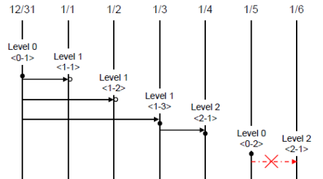
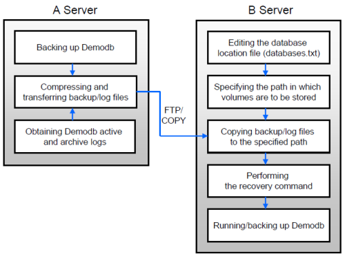

cubrid Utilities¶
The following shows how to use the cubrid management utilities.
cubrid utility_name
utility_name:
createdb [option] <database_name> <locale_name> --- Creating a database
deletedb [option] <database_name> --- Deleting a database
installdb [option] <database-name> --- Installing a database
renamedb [option] <source-database-name> <target-database-name> --- Renaming a database
copydb [option] <source-database-name> <target-database-name> --- Copying a database
backupdb [option] <database-name> --- Backing up a database
restoredb [option] <database-name> --- Restoring a database
addvoldb [option] <database-name> --- Adding a database volume file
spacedb [option] <database-name> --- Displaying details of database space
lockdb [option] <database-name> --- Displaying details of database lock
tranlist [option] <database-name> --- Checking transactions
killtran [option] <database-name> --- Removing transactions
optimizedb [option] <database-name> --- Updating database statistics
statdump [option] <database-name> --- Dumping statistic information of database server execution
compactdb [option] <database-name> --- Optimizing space by freeing unused space
diagdb [option] <database-name> --- Displaying internal information
checkdb [option] <database-name> --- Checking database consistency
alterdbhost [option] <database-name> --- Altering database host
plandump [option] <database-name> --- Displaying details of the query plan
loaddb [option] <database-name> --- Loading data and schema
unloaddb [option] <database-name> --- Unloading data and schema
paramdump [option] <database-name> --- Checking out the parameter values configured in a database
changemode [option] <database-name> --- Displaying or changing the server HA mode
applyinfo [option] <database-name> --- Displaying the status of being applied transaction log to the other node in HA replication environment
synccolldb [option] <database-name> --- Synchronizing the DB collation with the system collation
genlocale [option] <database-name> --- Compiling the locale information to use
dumplocale [option] <database-name> --- Printing human readable text for the compiled binary locale information
gen_tz [option] [<database-name>] --- Generates C source file containing timezone data ready to be compiled into a shared library
dump_tz [option] --- Displaying timezone related information
tde <operation> [option] <database-name> --- Managing Transparent Data Encryption (TDE)
vacuumdb [option] <database-name> --- Vacuuming deleted records or unnecessary mvcc related information from records in the database
flashback [option] <database-name> <owner_name.class_name> --- Provides statements to rewind a specific transaction.
cubrid Utility Logging¶
CUBRID supports logging feature for the execution result of cubrid utilities; for details, see cubrid Utility Logging.
createdb¶
The cubrid createdb utility creates databases and initializes them with the built-in CUBRID system tables. It can also define initial users to be authorized in the database and specify the locations of the logs and databases. In general, the cubrid createdb utility is used only by DBA.
Warning
When you create database, a locale name and a charset name after a DB name must be specified(e.g. ko_KR.utf8). It affects the length of string type, string comparison operation, etc. The specified charset when creating database cannot be changed later, so you should be careful when specifying it.
For charset, locale and collation setting, see An Overview of Globalization.
cubrid createdb [options] database_name locale_name.charset
- cubrid: An integrated utility for the CUBRID service and database management.
- createdb: A command used to create a new database.
- database_name: Specifies a unique name for the database to be created, without including the path name to the directory where the database will be created. If the specified database name is the same as that of an existing database name, CUBRID halts creation of the database to protect existing files.
- locale_name: A locale name to use in the database should be input. For a locale name which can be used in CUBRID, refer to Step 1: Selecting a Locale.
- charset: A characterset to use in the database should be input. A character set which can be used in CUBRID is iso88591, euckr or utf8.
- If locale_name is en_US and charset is omitted, a character set will be iso88591.
- If locale_name is ko_KR and charset is omitted, a character set will be utf8.
- All locale names except en_US and ko_KR cannot omit charset, and a charset can be specified only with utf8.
The maximum length of database name is 17 in English.
The following shows [options] available with the cubrid createdb utility.
--db-volume-size=SIZE size of first information volume
--db-page-size=SIZE database page SIZE in bytes
--log-volume-size=SIZE size of log archives
--log-page-size=SIZE log page SIZE in bytes
--comment=COMMENT COMMENT for a database
-F, --file-path=PATH directory PATH for database volumes
-L, --log-path=PATH directory PATH for log volumes
-B, --lob-base-path=PATH base directory PATH for external LOB data
--server-name=HOST server's HOST name
-r, --replace replace an existing database
--more-volume-file=FILE FILE contain specifications for creation of additional volumes
--user-definition-file=FILE FILE contain user definitions
--csql-initialization-file=FILE FILE contain SQLs for an initialization of the database
-o, --output-file=FILE redirect output messages to FILE
-v, --verbose enable verbose status messages
-
--db-volume-size=SIZE¶ This option specifies the size of the database volume that will be created first. The default value is the value of the system parameter db_volume_size. You can set units as K, M, G and T, which stand for kilobytes (KB), megabytes (MB), gigabytes (GB), and terabytes (TB) respectively; if you omit the unit, bytes will be applied. The size of the database is always rounded up to 64 disk sectors, which depends on the size of a page and can be 16M, 32M or 64M for page size 4k, 8k and 16k respectively.
The following example shows how to create a database named testdb and assign 512 MB to its first volume.
cubrid createdb --db-volume-size=512M testdb en_US
-
--db-page-size=SIZE¶ This option specifies the size of the database page; the minimum value is 4K and the maximum value is 16K (default). K stands for kilobytes (KB). The value of page size is one of the following: 4K, 8K, or 16K. If a value between 4K and 16K is specified, system rounds up the number. If a value greater than 16K or less than 4K, the specified number is used.
The following example shows how to create a database named testdb and configure its page size 16K.
cubrid createdb --db-page-size=16K testdb en_US
-
--log-volume-size=SIZE¶ This option specifies the size of the database log volume. The default value is the same as database volume size, and the minimum value is 20M. You can set units as K, M, G and T, which stand for kilobytes (KB), megabytes (MB), gigabytes (GB), and terabytes (TB) respectively. If you omit the unit, bytes will be applied.
The following example shows how to create a database named testdb and assign 256 MB to its log volume.
cubrid createdb --log-volume-size=256M testdb en_US
-
--log-page-size=SIZE¶ This option specifies the size of the log volume page. The default value is the same as data page size. The minimum value is 4K and the maximum value is 16K. K stands for kilobytes (KB). The value of page size is one of the following: 4K, 8K, or 16K. If a value between 4K and 16K is specified, system rounds up the number. If a value greater than 16K or less than 4K, the specified number is used.
The following example shows how to create a database named testdb and configure its log volume page size 8K.
cubrid createdb --log-page-size=8K testdb en_US
-
--comment=COMMENT¶ This option specifies a comment to be included in the database volume header. If the character string contains spaces, the comment must be enclosed in double quotes.
The following example shows how to create a database named testdb and add a comment to the database volume.
cubrid createdb --comment "a new database for study" testdb en_US
-
-F,--file-path=PATH¶ The -F option specifies an absolute path to a directory where the new database will be created. If the -F option is not specified, the new database is created in the current working directory.
The following example shows how to create a database named testdb in the directory /dbtemp/new_db.
cubrid createdb -F "/dbtemp/new_db/" testdb en_US
-
-L,--log-path=PATH¶ The -L option specifies an absolute path to the directory where database log files are created. If the -L option is not specified, log files are created in the directory specified by the -F option. If neither -F nor -L option is specified, database log files are created in the current working directory.
The following example shows how to create a database named testdb in the directory /dbtemp/newdb and log files in the directory /dbtemp/db_log.
cubrid createdb -F "/dbtemp/new_db/" -L "/dbtemp/db_log/" testdb en_US
-
-B,--lob-base-path=PATH¶ This option specifies a directory where LOB data files are stored when BLOB/CLOB data is used. If the –lob-base-path option is not specified, LOB data files are store in <location of database volumes created>/lob directory.
The following example shows how to create a database named testdb in the working directory and specify /home/data1 of local file system as a location of LOB data files.
cubrid createdb --lob-base-path "file:/home1/data1" testdb en_US
-
--server-name=HOST¶ This option enables the server of a specific database to run in the specified host when CUBRID client/server is used. The information of a host specified is stored in the databases.txt file. If this option is not specified, the current localhost is specified by default.
The following example shows how to create a database named testdb and register it on the host aa_host.
cubrid createdb --server-name aa_host testdb en_US
-
-r,--replace¶ This option creates a new database and overwrites an existing database if one with the same name exists.
The following example shows how to create a new database named testdb and overwrite the existing database with the same name.
cubrid createdb -r testdb en_US
-
--more-volume-file=FILE¶ This option creates an additional volume based on the specification contained in the file specified by the option. The volume is created in the same directory where the database is created. Instead of using this option, you can add a volume by using the cubrid addvoldb utility.
The following example shows how to create a database named testdb as well as an additional volume based on the specification stored in the vol_info.txt file.
cubrid createdb --more-volume-file vol_info.txt testdb en_US
The following is a specification of the additional volume contained in the vol_info.txt file. The specification of each volume must be written on a single line.
#xxxxxxxxxxxxxxxxxxxxxxxxxxxxxxxxxxxxxxxxxxxxxxxxxxxxxxxxxxxxxxxxxxxxxxxxxxxxxxxxx # NAME volname COMMENTS volcmnts PURPOSE volpurp NPAGES volnpgs NAME data_v1 COMMENTS "data information volume" PURPOSE data NPAGES 1000 NAME data_v2 COMMENTS "data information volume" NPAGES 1000 NAME temp_v1 COMMENTS "temporary information volume" PURPOSE temp NPAGES 500 #xxxxxxxxxxxxxxxxxxxxxxxxxxxxxxxxxxxxxxxxxxxxxxxxxxxxxxxxxxxxxxxxxxxxxxxxxxxxxxxxx
As shown in the example, the specification of each volume consists following.
[NAME volname] [COMMENTS volcmnts] [PURPOSE volpurp] NPAGES volnpgs
volname: The name of the volume to be created. It must follow the UNIX file name conventions and be a simple name not including the directory path. The specification of a volume name can be omitted. If it is, the “database name to be created by the system_volume identifier” becomes the volume name.
volcmnts: Comment to be written in the volume header. It contains information on the additional volume to be created. The specification of the comment on a volume can also be omitted.
volpurp: The purpose for which the volume will be used. It can be either permanent data (default option) or temporary.
Note
For backward compatibility, all old keywords, data, index, temp, or generic are accepted. temp stands for temporary data purpose, while the rest stand for permanent data purpose.
volnpgs: The number of pages of the additional volume to be created. The specification of the number of pages of the volume cannot be omitted; it must be specified. The actual volume size is rounded up to the next multiple of 64 sectors.
-
--user-definition-file=FILE¶ This option adds users who have access to the database to be created. It adds a user based on the specification contained in the user information file specified by the parameter. Instead of using the –user-definition-file option, you can add a user by using the CREATE USER statement (for details, see CREATE USER).
The following example shows how to create a database named testdb and add users to testdb based on the user information defined in the user_info.txt file.
cubrid createdb --user-definition-file=user_info.txt testdb en_US
The syntax of a user information file is as follows:
USER user_name [ <groups_clause> | <members_clause> ] <groups_clause>: [ GROUPS <group_name> [ { <group_name> }... ] ] <members_clause>: [ MEMBERS <member_name> [ { <member_name> }... ] ]
- The user_name is the name of the user who has access to the database. It must not include spaces.
- The GROUPS clause is optional. The group_name is the upper level group that contains the user_name . Here, the group_name can be multiply specified and must be defined as USER in advance.
- The MEMBERS clause is optional. The member_name is the name of the lower level member that belongs to the user_name . Here, the member_name can be multiply specified and must be defined as USER in advance.
Comments can be used in a user information file. A comment line must begin with a consecutive hyphen lines (–). Blank lines are ignored.
The following example shows a user information in which grandeur and sonata are included in sedan group, tuscan is included in suv group, and i30 is included in hatchback group. The name of the user information file is user_info.txt.
-- -- Example 1 of a user information file -- USER sedan USER suv USER hatchback USER grandeur GROUPS sedan USER sonata GROUPS sedan USER tuscan GROUPS suv USER i30 GROUPS hatchback
The following example shows a file that has the same user relationship information as the file above. The difference is that the MEMBERS statement is used in the file below.
-- -- Example 2 of a user information file -- USER grandeur USER sonata USER tuscan USER i30 USER sedan MEMBERS sonata grandeur USER suv MEMBERS tuscan USER hatchback MEMBERS i30
-
--csql-initialization-file=FILE¶ This option executes an SQL statement on the database to be created by using the CSQL Interpreter. A schema can be created based on the SQL statement contained in the file specified by the parameter.
The following example shows how to create a database named testdb and execute the SQL statement defined in table_schema.sql through the CSQL Interpreter.
cubrid createdb --csql-initialization-file table_schema.sql testdb en_US
-
-o,--output-file=FILE¶ This option stores messages related to the database creation to the file given as a parameter. The file is created in the same directory where the database was created. If the -o option is not specified, messages are displayed on the console screen. The -o option allows you to use information on the creation of a certain database by storing messages, generated during the database creation, to a specified file.
The following example shows how to create a database named testdb and store the output of the utility to the db_output file instead of displaying it on the console screen.
cubrid createdb -o db_output testdb en_US
-
-v,--verbose¶ This option displays all information on the database creation operation onto the screen. Like the -o option, this option is useful in checking information related to the creation of a specific database. Therefore, if you specify the -v option together with the -o option, you can store the output messages in the file given as a parameter; the messages contain the operation information about the cubrid createdb utility and database creation process.
The following example shows how to create a database named testdb and display detailed information on the operation onto the screen.
cubrid createdb -v testdb en_US
Note
- temp_file_max_size_in_pages is a parameter used to configure the maximum size of temporary volumes - used for complicated queries or storing arrays - on the disk. With the default value -1, the temporary volumes size is only limited by the capacity of the disk specified by the temp_volume_path parameter. If the value is 0, no temporary volumes can be created. In this case, a permanent volume with temporary data purpose should be added by using the cubrid addvoldb utility. For an efficient storage management, it is recommended to use the latter approach.
- By using the cubrid spacedb utility, you can check the remaining space of each volume. By using the cubrid addvoldb utility, you can add more volumes as needed while managing the database. You are advised to add more volumes when there is less system load. When all preassigned volumes are completely in use, the database system automatically creates new volumes.
The following example shows how to create a database, with additional volumes, including one for temporary data purpose.
cubrid createdb --db-volume-size=512M --log-volume-size=256M cubriddb en_US
cubrid addvoldb -S -n cubriddb_DATA01 --db-volume-size=512M cubriddb
cubrid addvoldb -S -p temp -n cubriddb_TEMP01 --db-volume-size=512M cubriddb
Note
Creating a database using an existing key file
When the database is created, a key file is created together by default. If you want to use an existing key file when creating a database:
- Copy the key file with the name <database-name>_keys.
- Specify the directory path of the copied key file by the system parameter tde_keys_file_path.
- Create a database by using the createdb utility.
For more information on the TDE key file, see File-based Master Key Management.
addvoldb¶
If you want to micromanage CUBRID storage volumes, addvoldb is the tool for you. You can finely tune each file name, path, purpose, and size. The database system can handle all storage by itself, but it uses default values to configure each new volume.
The command for manually adding a database volume is as follows.
cubrid addvoldb [options] database_name
- cubrid: An integrated utility for CUBRID service and database management.
- addvoldb: A command that adds a specified number of pages of the new volume to a specified database.
- database_name: Specifies the name of the database to which a volume is to be added without including the path name to the directory where the database is to be created.
The following example shows how to create a database, with additional multi-purpose volumes.
cubrid createdb --db-volume-size=512M --log-volume-size=256M cubriddb en_US
cubrid addvoldb -S -n cubriddb_DATA01 --db-volume-size=512M cubriddb
cubrid addvoldb -S -p temp -n cubriddb_TEMP01 --db-volume-size=512M cubriddb
The following shows [options] available with the cubrid addvoldb utility.
--db-volume-size=SIZE size of additional volume
-n, --volume-name=NAME NAME of information volume
-F, --file-path=PATH PATH for adding volume file
--comment=COMMENT COMMENT for adding volume file
-p, --purpose=PURPOSE PURPOSE for adding volume file
-S, --SA-mode stand-alone mode execution
-C, --CS-mode client-server mode execution
--max-writesize-in-sec=SIZE the amount of volume written per second
-
--db-volume-size=SIZE¶ –db-volume-size is an option that specifies the size of the volume to be added to a specified database. If the –db-volume-size option is omitted, the value of the system parameter db_volume_size is used by default. You can set units as K, M, G and T, which stand for kilobytes (KB), megabytes (MB), gigabytes (GB), and terabytes (TB) respectively. If you omit the unit, bytes will be applied. The size of the database is always rounded up to 64 disk sectors, which depends on the size of a page and can be 16M, 32M or 64M for page size 4k, 8k and 16k respectively.
The following example shows how to add a volume for which 256 MB are assigned to the testdb database.
cubrid addvoldb --db-volume-size=256M testdb
-
-n,--volume-name=NAME¶ This option specifies the name of the volume to be added to a specified database. The volume name must follow the file name protocol of the operating system and be a simple one without including the directory path or spaces. If the -n option is omitted, the name of the volume to be added is configured by the system automatically as “database name_volume identifier”. For example, if the database name is testdb, the volume name testdb_x001 is automatically configured.
The following example shows how to specify a different name, testdb_v1, to newly added volume.
cubrid addvoldb -n testdb_v1 testdb
-
-F,--file-path=PATH¶ This option specifies the directory path where the volume to be added will be stored. If the -F option is omitted, the value of the system parameter volume_extension_path is used by default.
The following example shows how to add a volume in the /dbtemp/addvol directory. Since the -n option is not specified for the volume name, the volume name testdb_x001 will be created.
cubrid addvoldb -F /dbtemp/addvol/ testdb
-
--commentCOMMENT¶ This option facilitates to retrieve information on the added volume by adding such information in the form of comments. It is recommended that the contents of a comment include the name of DBA who adds the volume, or the purpose of adding the volume. The comment must be enclosed in double quotes.
The following example shows how to add a volume and inserts a comment with additional information.
cubrid addvoldb --comment "Data volume added by cheolsoo kim because permanent data space was almost depleted." testdb
-
-p,--purpose=PURPOSE¶ This option specifies the purpose of the volume to be added. The purpose defines the type of files that will be stored in added volume:
- PERMANENT DATA to store table rows, indexes and system files.
- TEMPORARY DATA to store intermediate and final results of query processing and sorting.
If not specified, the purpose of the volume is by default considered PERMANENT DATA. The following example shows how to change it to temporary.
cubrid addvoldb -p temp testdb
Note
PERMANENT DATA volumes used to be classified as generic, data and index. The design of volumes has been changed, and since then the classification no longer exists. In order to avoid invalidating your old scripts, we chose to keep the keywords as valid options, but their effect will be the same. The only remaining option value with a real effect is temp.
For detailed information on each purpose, see Database Volume Structure.
-
-S,--SA-mode¶ This option accesses the database in standalone mode without running the server process. This option has no parameter. If the -S option is not specified, the system assumes to be in client/server mode.
cubrid addvoldb -S --db-volume-size=256M testdb
-
-C,--CS-mode¶ This option accesses the database in client/server mode by running the server and the client separately. There is no parameter. Even when the -C option is not specified, the system assumes to be in client/server mode by default.
cubrid addvoldb -C --db-volume-size=256M testdb
-
--max-writesize-in-sec=SIZE¶ The –max-writesize-in-sec is used to limit the impact of system operating when you add a volume to the database. This can limit the maximum writing size per second. The unit of this option is K(kilobytes) and M(megabytes). The minimum value is 160K. If you set this value as less than 160K, it is changed as 160K. It can be used only in client/server mode.
The below is an example to limit the writing size of the 2GB volume as 1MB. Consuming time will be about 35 minutes(= (2048MB/1MB) /60 sec.).
cubrid addvoldb -C --db-volume-size=2G --max-writesize-in-sec=1M testdb
deletedb¶
The cubrid deletedb utility is used to delete a database. You must use the cubrid deletedb utility to delete a database, instead of using the file deletion commands of the operating system; a database consists of a few interdependent files.
The cubrid deletedb utility also deletes the information on the database from the database location file (databases.txt). The cubrid deletedb utility must be run offline, that is, in standalone mode when nobody is using the database.
cubrid deletedb [options] database_name
- cubrid: An integrated utility for the CUBRID service and database management.
- deletedb: A command to delete a database, its related data, logs and all backup files. It can be executed successfully only when the database is in a stopped state.
- database_name: Specifies the name of the database to be deleted without including the path name.
The following shows [options] available with the cubrid deletedb utility.
-o, --output-file=FILE redirect output messages to FILE
-d, --delete-backup delete backup volumes
-
-o,--output-file=FILE¶ This option specifies the file name for writing messages:
cubrid deletedb -o deleted_db.out testdb
The cubrid deletedb utility also deletes the database information contained in the database location file (databases.txt). The following message is returned if you enter a utility that tries to delete a non-existing database.
cubrid deletedb testdb Database "testdb" is unknown, or the file "databases.txt" cannot be accessed.
-
-d,--delete-backup¶ This option deletes database volumes, backup volumes and backup information files simultaneously. If the -d option is not specified, backup volume and backup information files are not deleted.
cubrid deletedb -d testdb
renamedb¶
The cubrid renamedb utility renames a database. The names of information volumes, log volumes and control files are also renamed to conform to the new database one.
In contrast, the cubrid alterdbhost utility configures or changes the host name of the specified database. In other words, it changes the host name configuration in the databases.txt file.
cubrid renamedb [options] src_database_name dest_database_name
- cubrid: An integrated utility for the CUBRID service and database management.
- renamedb: A command that changes the existing name of a database to a new one. It executes successfully only when the database is in a stopped state. The names of related information volumes, log volumes and control files are also changed to new ones accordingly.
- src_database_name: The name of the existing database to be renamed. The path name to the directory where the database is to be created must not be included.
- dest_database_name: The new name of the database. It must not be the same as that of an existing database. The path name to the directory where the database is to be created must not be included.
The following shows [options] available with the cubrid renamedb utility.
-E, --extended-volume-path=PATH directory PATH for extended information volumes
-i, --control-file=FILE renaming volumes over several locations written in the control file
-d, --delete-backup delete backup volumes
-
-E,--extended-volume-path=PATH¶ This option renames an extended volume created in a specific directory path (e.g. /dbtemp/addvol/), and then moves the volume to a new directory. This specifies a new directory path (e.g. /dbtemp/newaddvols/) where the renamed extended volume will be moved.
If it is not specified, the extended volume is only renamed in the existing path without being moved. If a directory path outside the disk partition of the existing database volume or an invalid one is specified, the rename operation is not executed. This option cannot be used together with the -i option.
cubrid renamedb -E /dbtemp/newaddvols/ testdb testdb_1
-
-i,--control-file=FILE¶ The option specifies an input file in which directory information is stored to change all database name of volumes or files and assign different directory at once. To perform this work, the -i option is used. The -i option cannot be used together with the -E option.
cubrid renamedb -i rename_path testdb testdb_1
The following are the syntax and example of a file that contains the name of each volume, the current directory path and the directory path where renamed volumes will be stored.
volid source_fullvolname dest_fullvolname
- volid: An integer that is used to identify each volume. It can be checked in the database volume control file (database_name_vinf).
- source_fullvolname: The current directory path to each volume.
- dest_fullvolname: The target directory path where renamed volumes will be moved. If the target directory path is invalid, the database rename operation is not executed.
-5 /home1/user/testdb_vinf /home1/CUBRID/databases/testdb_1_vinf -4 /home1/user/testdb_lginf /home1/CUBRID/databases/testdb_1_lginf -3 /home1/user/testdb_bkvinf /home1/CUBRID/databases/testdb_1_bkvinf -2 /home1/user/testdb_lgat /home1/CUBRID/databases/testdb_1_lgat 0 /home1/user/testdb /home1/CUBRID/databases/testdb_1 1 /home1/user/backup/testdb_x001/home1/CUBRID/databases/backup/testdb_1_x001
-
-d,--delete-backup¶ This option renames the testdb database and at once forcefully delete all backup volumes and backup information files that are in the same location as testdb. Note that you cannot use the backup files with the old names once the database is renamed. If the -d option is not specified, backup volumes and backup information files are not deleted.
cubrid renamedb -d testdb testdb_1
alterdbhost¶
The cubrid alterdbhost utility sets or changes the host name of the specified database. It changes the host name set in the databases.txt file.
cubrid alterdbhost [option] database_name
- cubrid: An integrated utility for the CUBRID service and database management
- alterdbhost: A command used to change the host name of the current database
The following shows the option available with the cubrid alterdbhost utility.
-
-h,--host=HOST¶ The -h option specifies the host name to be changed. When this option is omitted, specifies the host name to localhost.
copydb¶
The cubrid copydb utility copy or move a database to another location. As arguments, source and target name of database must be given. A target database name must be different from a source database name. When the target name argument is specified, the location of target database name is registered in the databases.txt file.
The cubrid copydb utility can be executed only offline (that is, state of a source database stop).
cubrid copydb [options] src-database-name dest-database-name
- cubrid: An integrated utility for the CUBRID service and database management.
- copydb: A command that copy or move a database from one to another location.
- src-database-name: The names of source and target databases to be copied or moved.
- dest-database-name: A new (target) database name.
If options are omitted, a target database is copied into the same directory of a source database.
The following shows [options] available with the cubrid copydb utility.
--server-name=HOST server's HOST name
-F, --file-path=PATH directory PATH for database volumes
-L, --log-path=PATH directory PATH for log volumes
-E, --extended-volume-path=PATH directory PATH for extended information volumes
-i, --control-file=FILE copying volumes over several locations written in the control file
-r, --replace replace an existing database
-d, --delete-source delete a source database
--copy-lob-path copy external storage PATH for LOB data from the source database. By default, the LOB path is not copied
-B, --lob-base-path=PATH base directory PATH for external LOB data
-
--server-name=HOST¶ The –server-name option specifies a host name of new database. The host name is registered in the databases.txt file. If this option is omitted, a local host is registered.
cubrid copydb --server-name=cub_server1 demodb new_demodb
-
-F,--file-path=PATH¶ The -F option specifies a specific directory path where a new database volume is stored with an -F option. It represents specifying an absolute path. If the specified directory does not exist, an error is displayed. If this option is omitted, a new database volume is created in the current working directory. And this information is specified in vol-path of the databases.txt file.
cubrid copydb -F /home/usr/CUBRID/databases demodb new_demodb
-
-L,--log-path=PATH¶ The -L option specifies a specific directory path where a new database volume is stored with an -L option. It represents specifying an absolute path. If the specified directory does not exist, an error is displayed. If this option is omitted, a new database volume is created in the current working directory. And this information is specified in log-path of the databases.txt file.
cubrid copydb -L /home/usr/CUBRID/databases/logs demodb new_demodb
-
-E,--extended-volume-path=PATH¶ The -E option specifies a specific directory path where a new database extended volume is stored with an -E. If this option is omitted, a new database extended volume is created in the location of a new database volume or in the registered path of controlling file. The -i option cannot be used with this option.
cubrid copydb -E home/usr/CUBRID/databases/extvols demodb new_demodb
-
-i,--control-file=FILE¶ The -i option specifies an input file where a new directory path information and a source volume are stored to copy or move multiple volumes into a different directory, respectively. This option cannot be used with the -E option. An input file named copy_path is specified in the example below.
cubrid copydb -i copy_path demodb new_demodb
The following is an example of input file that contains each volume name, current directory path, and new directory and volume names.
# volid source_fullvolname dest_fullvolname 0 /usr/databases/demodb /drive1/usr/databases/new_demodb 1 /usr/databases/demodb_data1 /drive1/usr/databases/new_demodb_data1 2 /usr/databases/ext/demodb_ext1 /drive2//usr/databases/new_demodb_ext1 3 /usr/databases/ext/demodb_ext2 /drive2/usr/databases/new_demodb_ext2
- volid: An integer that is used to identify each volume. It can be checked in the database volume control file (database_name_vinf).
- source_fullvolname: The current directory path to each source database volume.
- dest_fullvolname: The target directory path where new volumes will be stored. You should specify a valid path.
-
-r,--replace¶ If the -r option is specified, a new database name overwrites the existing database name if it is identical, instead of outputting an error.
cubrid copydb -r -F /home/usr/CUBRID/databases demodb new_demodb
-
-d,--delete-source¶ If the -d option is specified, a source database is deleted after the database is copied. This execution brings the same the result as executing cubrid deletedb utility after copying a database. Note that if a source database contains LOB data, LOB file directory path of a source database is copied into a new database and it is registered in the lob-base-path of the databases.txt file.
cubrid copydb -d -F /home/usr/CUBRID/databases demodb new_demodb
-
--copy-lob-path¶ If the –copy-lob-path option is specified, the lob directory path of the target database will be set to the lob directory path of the source database. If this option is omitted, the lob directory path of the target database will be set to <target database directory path>/lob. This option does not copy lob files and cannot be used with the -B option.
cubrid copydb --copy-lob-path demodb new_demodb
-
-B,--lob-base-path=PATH¶ If the -B option is specified, a specified directory is specified as for LOB files of a new database and a source database is copied. This option cannot be used with the –copy-lob-path option.
cubrid copydb -B /home/usr/CUBRID/databases/new_lob demodb new_demodb
installdb¶
The cubrid installdb utility is used to register the information of a newly installed database to databases.txt, which stores database location information. The execution of this utility does not affect the operation of the database to be registered.
cubrid installdb [options] database_name
- cubrid: An integrated utility for the CUBRID service and database management.
- installdb: A command that registers the information of a moved or copied database to databases.txt.
- database_name: The name of database to be registered to databases.txt.
If no [options] are used, the command must be executed in the directory where the corresponding database exists.
The following shows [options] available with the cubrid installdb utility.
--server-name=HOST server HOST name
-F, --file-path=PATH directory PATH for database volumes
-L, --log-path=PATH directory PATH for log volumes
-
--server-name=HOST¶ This option registers the server host information of a database to databases.txt with a specific host name. If this is not specified, the current host information is registered.
cubrid installdb --server-name=cub_server1 testdb
-
-L,--log-path=PATH¶ This option registers the absolute directory path of a database log volume to databases.txt by using the -L option. If this option is not specified, the directory path of a volume is registered.
cubrid installdb -L /home/cubrid/CUBRID/databases/logs/testdb testdb
backupdb¶
A database backup is the procedure of storing CUBRID database volumes, control files and log files, and it is executed by using the cubrid backupdb utility or the CUBRID Manager. DBA must regularly back up the database so that the database can be properly restored in the case of storage media or file errors. The restore environment must have the same operating system and the same version of CUBRID as the backup environment. For such a reason, you must perform a backup in a new environment immediately after migrating a database to a new version.
To recover all database pages, control files and the database to the state at the time of backup, the cubrid backupdb utility copies all necessary log records.
cubrid backupdb [options] database_name[@hostname]
- @hostname: It is omitted when you do backup in standalone mode. If you do backup on the HA environment, specify “@hostname” after the database name. hostname is a name specified in $CUBRID_DATABASES/databases.txt. If you want to setup a local server, you can specify it as “@localhost”.
The following shows options available with the cubrid backupdb utility (options are case sensitive).
-D, --destination-path=PATH store backup volumes to directory PATH
-r, --remove-archive delete unnecessary log-archives
-l, --level=LEVEL backup level
-o, --output-file=FILE print detailed backup messages to FILE
-S, --SA-mode stand-alone mode execution
-C, --CS-mode client-server mode execution
--no-check don't check a consistency of the database
-t, --thread-count=COUNT number of threads
--no-compress don't compress backup volumes
--sleep-msecs=N sleep N millisecond per 1M read
-k, --separate-keys keys file (_keys) for TDE is not included in the backup volume, but is separated into a file instead
-
-D,--destination-path=PATH¶ The following shows how to use the -D option to store backup files in the specified directory. The backup file directory must be specified before performing this job. If the -D option is not specified, backup files are stored in the log directory specified in the databases.txt file which stores database location information.
cubrid backupdb -D /home/cubrid/backup demodb
The following shows how to store backup files in the current directory by using the -D option. If you enter a period (.) following the -D option as an argument, the current directory is specified.
cubrid backupdb -D . demodb
-
-r,--remove-archive¶ Writes an active log to a new archive log file when the active log is full. If a backup is performed in such a situation and backup volumes are created, backup logs created before the backup will not be used in subsequent backups. The -r option is used to remove archive log files that will not be used anymore in subsequent backups after the current one is complete. The -r option only removes unnecessary archive log files that were created before backup, and does not have any impact on backup; however, if an administrator removes the archive log file after a backup, it may become impossible to restore everything. For this reason, archive logs should be removed only after careful consideration.
If you perform an incremental backup (backup level 1 or 2) with the -r option, there is the risk that normal recovery of the database will be impossible later on. Therefore, it is recommended that the -r option only be used when a full backup is performed.
cubrid backupdb -r demodb
-
-l,--level=LEVEL¶ The following shows how to execute an incremental backup of the level specified by using the -l option. If the -l option is not specified, a full backup is performed. For details on backup levels, see Incremental Backup .
cubrid backupdb -l 1 demodb
-
-o,--output-file=FILE¶ The following shows how to write the progress of the database backup to the info_backup file by using the -o option.
cubrid backupdb -o info_backup demodb
The following shows the contents of the info_backup file. You can check the information on the number of threads, compression method, backup start time, the number of permanent volumes, backup progress and backup end time.
[ Database(demodb) Full Backup start ] - num-threads: 1 - compression method: NONE - backup start time: Mon Jul 21 16:51:51 2008 - number of permanent volumes: 1 - backup progress status ----------------------------------------------------------------------------- volume name | # of pages | backup progress status | done ----------------------------------------------------------------------------- demodb_keys | 1 | ######################### | done demodb_vinf | 1 | ######################### | done demodb | 25000 | ######################### | done demodb_lginf | 1 | ######################### | done demodb_lgat | 25000 | ######################### | done ----------------------------------------------------------------------------- # backup end time: Mon Jul 21 16:51:53 2008 [Database(demodb) Full Backup end]
-
-S,--SA-mode¶ The following shows how to perform backup in standalone mode (that is, backup offline) by using the -S option. If the -S option is not specified, the backup is performed in client/server mode.
cubrid backupdb -S demodb
-
-C,--CS-mode¶ The following shows how to perform backup in client/server mode by using the -C option and the demodb database is backed up online. If the -C option is not specified, a backup is performed in client/server mode.
cubrid backupdb -C demodb
-
--no-check¶ The following shows how to execute backup without checking the consistency of the database by using the –no-check option.
cubrid backupdb --no-check demodb
-
-t,--thread-count=COUNT¶ The following shows how to execute parallel backup with the number of threads specified by the administrator by using the -t option. Even when the argument of the -t option is not specified, a parallel backup is performed by automatically assigning as many threads as CPUs in the system.
cubrid backupdb -t 4 demodb
-
--no-compress¶ By default, CUBRID compresses the target database in order to reduce the size of the backup volume and then saves it. If a user wants to eliminate the CPU usage by the compression, they can set the –no-compress option not to compress the backup volume.
cubrid backupdb --no-compress demodb
-
--sleep-msecs=NUMBER¶ This option allows you to specify the interval of idle time during the database backup. The default value is 0 in milliseconds. The system becomes idle for the specified amount of time whenever it reads 1 MB of data from a file. This option is used to reduce the performance degradation of an active server during a live backup. The idle time will prevent excessive disk I/O operations.
cubrid backupdb --sleep-msecs=5 demodb
-
-k,--separate-keys¶ This option is used not to include the key file in the backup volume. The key file that is not included is separated into a file named <database_name>_bk<backup_level>_keys. If this option is not given, the key file is included in the backup volume by default. For a detailed description of key file separation, see Backup Encryption.
cubrid backupdb -k demodb
Backup Strategy and Method¶
The following must be considered before performing a backup:
- Selecting the data to be backed up
- Determine whether it is valid data worth being preserved.
- Determine whether to back up the entire database or only part of it.
- Check whether there are other files to be backed up along with the database.
- Choosing a backup method
- Choose the backup method from one of incremental and online backups. Also, specify whether to use compression backup, parallel backup, and mode.
- Prepare backup tools and devices available.
- Determining backup time
- Identify the time when the least usage in the database occur.
- Check the size of the archive logs.
- Check the number of clients using the database to be backed up.
Online Backup
An online backup (or a hot backup) is a method of backing up a currently running database. It provides a snapshot of the database image at a certain point in time. Because the backup target is a currently running database, it is likely that uncommitted data will be stored and the backup may affect the operation of other databases.
To perform an online backup, use the cubrid backupdb -C command.
Offline Backup
An offline backup (or a cold backup) is a method of backing up a stopped database. It provides a snapshot of the database image at a certain point in time.
To perform an offline backup, use the cubrid backupdb -S command.
Incremental Backup
An incremental backup, which is dependent upon a full backup, is a method of only backing up data that have changed since the last backup. This type of backup has an advantage of requiring less volume and time than a full backup. CUBRID supports backup levels 0, 1 and 2. A higher level backup can be performed sequentially only after a lower lever backup is complete.
To perform an incremental backup, use the cubrid backupdb -l LEVEL command.
The following example shows incremental backup. Let’s example backup levels in details.
- Full backup (backup level 0) : Backup level 0 is a full backup that includes all database pages.
The level of a backup which is attempted first on the database naturally becomes a 0 level. DBA must perform full backups regularly to prepare for restore situations. In the example, full backups were performed on December 31st and January 5th.
- First incremental backup (backup level 1) : Backup level 1 is an incremental backup that only stores changes since the level 0 full backup, and is called a “first incremental backup.”
Note that the first incremental backups are attempted sequentially such as <1-1>, <1-2> and <1-3> in the example, but they are always performed based on the level 0 full backup.
Suppose that backup files are created in the same directory. If the first incremental backup <1-1> is performed on January 1st and then the first incremental backup <1-2> is attempted again on January 2nd, the incremental backup file created in <1-1> is overwritten. The final incremental backup file is created on January 3rd because the first incremental backup is performed again on that day.
Since there can be a possibility that the database needs to be restored the state of January 1st or January 2nd, it is recommended for DBA to store the incremental backup files <1-1> and <1-2> separately in storage media before overwriting with the final incremental file.
- Second incremental backup (backup level 2) : Backup level 2 is an incremental backup that only stores data that have changed since the first incremental backup, and is called a “second incremental backup.”
A second incremental backup can be performed only after the first incremental backup. Therefore, the second incremental backup attempted on January fourth succeeds; the one attempted on January sixth fails.
Backup files created for backup levels 0, 1 and 2 may all be required for database restore. To restore the database to its state on January fourth, for example, you need the second incremental backup generated at <2-1>, the first incremental backup file generated at <1-3>, and the full backup file generated at <0-1>. That is, for a full restore, backup files from the most recent incremental backup file to the earliest created full backup file are required.
Compress Backup
A compress backup is a method of backing up the database by compressing it. This type of backup reduces disk I/O costs and stores disk space because it requires less backup volume.
From version 11.2 of CUBRID, compress backup is used by default.
Parallel Backup Mode
A parallel or multi-thread backup is a method of performing as many backups as the number of threads specified. In this way, it reduces backup time significantly. Basically, threads are given as many as the number of CPUs in the system.
To perform a parallel backup, use the cubrid backupdb -t | –thread-count command.
Managing Backup Files¶
One or more backup files can be created in sequence based on the size of the database to be backed up. A unit number is given sequentially (000, 001-0xx) to the extension of each backup file based in the order of creation.
Managing Disk Capacity during the Backup
During the backup process, if there is not enough space on the disk to store the backup files, a message saying that the backup cannot continue appears on the screen. This message contains the name and path of the database to be backed up, the backup file name, the unit number of backup files and the backup level. To continue the backup process, the administrator can choose one of the following options:
- Option 0: An administrator enters 0 to discontinue the backup.
- Option 1: An administrator inserts a new disk into the current device and enters 1 to continue the backup.
- Option 2: An administrator changes the device or the path to the directory where backup files are stored and enters 2 to continue the backup.
******************************************************************
Backup destination is full, a new destination is required to continue:
Database Name: /local1/testing/demodb
Volume Name: /dev/rst1
Unit Num: 1
Backup Level: 0 (FULL LEVEL)
Enter one of the following options:
Type
- 0 to quit.
- 1 to continue after the volume is mounted/loaded. (retry)
- 2 to continue after changing the volume's directory or device.
******************************************************************
Managing Archive Logs¶
You must not delete archive logs by using the file deletion command such as rm or del by yourself; the archive logs should be deleted by system configuration or the cubrid backupdb utility. In the following three cases, archive logs can be deleted.
In non-HA environment (ha_mode=off):
If you configure the force_remove_log_archives value to yes, archive logs are kept only the number specified in log_max_archives value; and the left logs are automatically deleted. However, if there is an active tranaction in the oldest archive log file, this file is not deleted until the transaction is completed.
In an HA environment (ha_mode=on):
If you configure the force_remove_log_archives values to no and specify the number specified in log_max_archives value, archive logs are automatically deleted after replication is applied.
Note
If you set force_remove_log_archives as yes when “ha_mode=on”, unapplied archive logs can be deleted; therefore, this setting is not recommended. However, if keeping disk space is prior to keeping replication, set force_remove_log_archives as yes and set log_max_archives as a proper value.
Use cubrid backupdb -r and run this command then archive logs are deleted; note that -r option should not be used in an HA environment.
If you want to delete logs as much as possible while operating a database, configure the value of log_max_archives to a small value or 0 and configure the value of force_remove_log_archives to yes. Note that in an HA environment, if the value of force_remove_log_archives is yes, archive logs that have not replicated in a slave node are deleted, which can cause replication errors. Therefore, it is recommended that you configure it to no. Although the value of force_remove_log_archives is set to no, files that are complete for replication can be deleted by HA management process.
restoredb¶
A database restore is the procedure of restoring the database to its state at a certain point in time by using the backup files, active logs and archive logs which have been created in an environment of the same CUBRID version. To perform a database restore, use the cubrid restoredb utility or the CUBRID Manager.
The cubrid restoredb utility restores the database from the database backup by using the information written to all the active and archive logs since the execution of the last backup.
cubrid restoredb [options] database_name
If no option is specified, a database is restored to the point of the last commit by default. If no active/archive log files are required to restore to the point of the last commit, the database is restored only to the point of the last backup.
cubrid restoredb demodb
The following table shows options available with the cubrid restoredb utility (options are case sensitive).
-d, --up-to-date=DATE restore the database up to its condition at given DATE
--list display a list of backup volumes without restoring
-B, --backup-file-path=PATH PATH is a directory of backup volumes to be restored
-l, --level=LEVEL LEVEL of backup to be restored; see backup usage
-p, --partial-recovery perform partial recovery if any log archive is absent
-o, --output-file=FILE redirect output messages to FILE
-u, --use-database-location-path restore the database and log volumes to the path specified in the database location file
-k, --keys-file-path Path of key file (_keys) for TDE to be used during restoring
-
-d,--up-to-date=DATE¶ A database can be restored to the given point by the date-time specified by the -d option. The user can specify the restoration point manually in the dd-mm-yyyy:hh:mi:ss (e.g. 14-10-2008:14:10:00) format. If no active log/archive log files are required to restore to the point specified, the database is restored only to the point of the last backup.
cubrid restoredb -d 14-10-2008:14:10:00 demodb
If the user specifies the restoration point by using the backuptime keyword, it restores a database to the point of the last backup.
cubrid restoredb -d backuptime demodb
-
--list¶ This option displays information on backup files of a database; restoration procedure is not performed. This option is available even if the database is working, from CUBRID 9.3.
cubrid restoredb --list demodb
The following example shows how to display backup information by using the –list option. You can specify the path to which backup files of the database are originally stored as well as backup levels.
*** BACKUP HEADER INFORMATION *** Database Name: /local1/testing/demodb DB Creation Time: Mon Oct 1 17:27:40 2008 Pagesize: 4096 Backup Level: 1 (INCREMENTAL LEVEL 1) Start_lsa: 513|3688 Last_lsa: 513|3688 Backup Time: Mon Oct 1 17:32:50 2008 Backup Unit Num: 0 Release: 8.1.0 Disk Version: 8 Backup Pagesize: 4096 Zip Method: 0 (NONE) Zip Level: 0 (NONE) Previous Backup level: 0 Time: Mon Oct 1 17:31:40 2008 (start_lsa was -1|-1) Database Volume name: /local1/testing/demodb_keys Volume Identifier: -6, Size: 65 bytes (1 pages) Database Volume name: /local1/testing/demodb_vinf Volume Identifier: -5, Size: 308 bytes (1 pages) Database Volume name: /local1/testing/demodb Volume Identifier: 0, Size: 2048000 bytes (500 pages) Database Volume name: /local1/testing/demodb_lginf Volume Identifier: -4, Size: 165 bytes (1 pages) Database Volume name: /local1/testing/demodb_bkvinf Volume Identifier: -3, Size: 132 bytes (1 pages)
With the backup information displayed by using the –list option, you can check that backup files have been created at the backup level 1 as well as the point where the full backup of backup level 0 has been performed. Therefore, to restore the database in the example, you must prepare backup files for backup levels 0 and 1.
-
-B,--backup-file-path=PATH¶ You can specify the directory where backup files are to be located by using the -B option. If this option is not specified, the system retrieves the backup information file (dbname _bkvinf) generated upon a database backup; the backup information file in located in the log-path directory specified in the database location information file (databases.txt). And then it searches the backup files in the directory path specified in the backup information file. However, if the backup information file has been damaged or the location information of the backup files has been deleted, the system will not be able to find the backup files. Therefore, the administrator must manually specify the directory where the backup files are located by using the -B option.
cubrid restoredb -B /home/cubrid/backup demodb
If the backup files of a database is in the current directory, the administrator can specify the directory where the backup files are located by using the -B option.
cubrid restoredb -B . demodb
-
-l,--level=LEVEL¶ You can perform restoration by specifying the backup level of the database to 0, 1, or 2. For details on backup levels, see Incremental Backup .
cubrid restoredb -l 1 demodb
-
-p,--partial-recovery¶ You can perform partial restoration without requesting for the user’s response by using the -p option. If active or archive logs written after the backup point are not complete, by default the system displays a request message informing that log files are needed and prompting the user to enter an execution option. The partial restoration can be performed directly without such a request message by using the -p option. Therefore, if the -p option is used when performing restoration, data is always restored to the point of the last backup.
cubrid restoredb -p demodb
When the -p option is not specified, the message requesting the user to select the execution option is as follows:
*********************************************************** Log Archive /home/cubrid/test/log/demodb_lgar002 is needed to continue normal execution. Type - 0 to quit. - 1 to continue without present archive. (Partial recovery) - 2 to continue after the archive is mounted/loaded. - 3 to continue after changing location/name of archive. ***********************************************************
- Option 0: Stops restoring
- Option 1: Performing partial restoration without log files.
- Option 2: Performing restoration after locating a log to the current device.
- Option 3: Resuming restoration after changing the location of a log
-
-o,--output-file=FILE¶ The following syntax shows how to write the restoration progress of a database to the info_restore file by using the -o option.
cubrid restoredb -o info_restore demodb
-
-u,--use-database-location-path¶ This option restores a database to the path specified in the database location file(databases.txt). The -u option is useful when you perform a backup on server A and store the backup file on server B.
cubrid restoredb -u demodb
-
-k,--keys-file-path=PATH¶ This option specifies the path of a key file required to restore the database. If the valid key file is not given, it could fail to restore. If this option is not given, the appropriate key file is searched automatically according to a priority. For more information on this, refer to Backup Encryption.
cubrid restoredb -k /home/cubrid/backup_keys/demodb_bk1_keys demodb
NOTIFICATION messages, log recovery starting time and ending time are written into the server error log file or the restoredb error log file when database server is started or backup volume is restored; so you can check the elapsed time of these operations. In this message, the number of log records to be applied(redo) and the number of log pages are written together.
Time: 06/14/13 21:29:04.059 - NOTIFICATION *** file ../../src/transaction/log_recovery.c, line 748 CODE = -1128 Tran = -1, EID = 1
Log recovery is started. The number of log records to be applied: 96916. Log page: 343 ~ 5104.
.....
Time: 06/14/13 21:29:05.170 - NOTIFICATION *** file ../../src/transaction/log_recovery.c, line 843 CODE = -1129 Tran = -1, EID = 4
Log recovery is finished.
Restoring Strategy and Procedure¶
You must consider the following before restoring databases.
- Preparing backup files
- Identify the directory where the backup and log files are to be stored.
- If the database has been incrementally backed up, check whether an appropriate backup file for each backup level exists.
- Check whether the backed-up CUBRID database and the CUBRID database to be backed up are the same version.
- Choosing restore method
- Determine whether to perform a partial or full restore.
- Determine whether or not to perform a restore using incremental backup files.
- Prepare restore tools and devices available.
- Determining restore point
- Identify the point in time when the database server was terminated.
- Identify the point in time when the last backup was performed before database failure.
- Identify the point in time when the last commit was made before database failure.
Database Restore Procedure
The following procedure shows how to perform backup and restoration described in the order of time.
- Performs a full backup of demodb which stopped running at 2008/8/14 04:30.
- Performs the first incremental backup of demodb running at 2008/8/14 10:00.
- Performs the first incremental backup of demodb running at 2008/8/14 15:00. Overwrites the first incremental backup file in step 2.
- A system failure occurs at 2008/8/14 15:30, and the system administrator prepares the restore of demodb. Sets the restore time as 15:25, which is the time when the last commit was made before database failure
- The system administrator prepares the full backup file created in Step 1 and the first incremental backup file created in Step 3, restores the demodb database up to the point of 15:00, and then prepares the active and archive logs to restore the database up to the point of 15:25.
| Time | Command | Description |
|---|---|---|
| 2008/8/14 04:25 | cubrid server stop demodb | Shuts down demodb. |
| 2008/8/14 04:30 | cubrid backupdb -S -D /home/backup -l 0 demodb | Performs a full backup of demodb in offline mode and creates backup files in the specified directory. |
| 2008/8/14 05:00 | cubrid server start demodb | Starts demodb. |
| 2008/8/14 10:00 | cubrid backupdb -C -D /home/backup -l 1 demodb | Performs the first incremental backup of demodb online and creates backup files in the specified directory. |
| 2008/8/14 15:00 | cubrid backupdb -C -D /home/backup -l 1 demodb | Performs the first incremental backup of demodb online and creates backup files in the specified directory. Overwrites the first incremental backup file created at 10:00. |
| 2008/8/14 15:30 | A system failure occurs. | |
| 2008/8/14 15:40 | cubrid restoredb -l 1 -d 08/14/2008:15:25:00 demodb | Restores demodb based on the full backup file, first incremental backup file, active logs and archive logs. The database is restored to the point of 15:25 by the full and first incremental backup files, the active and archive logs. |
Restoring Database to Different Server¶
The following shows how to back up demodb on server A and restore it on server B with the backed up files.
Backup and Restore Environments
Suppose that demodb is backed up in the /home/cubrid/db/demodb directory on server A and restored into /home/cubrid/data/demodb on server B.
Backing up on server A
Back up demodb on server A. If a backup has been performed earlier, you can perform an incremental backup for data only that have changed since the last backup. The directory where the backup files are created, if not specified in the -D option, is created by default in the location where the log volume is stored. The following is a backup command with recommended options. For details on the options, see backupdb .
cubrid backupdb -z demodb
Editing the database location file on Server B
Unlike a general scenario where a backup and restore are performed on the same server, in a scenario where backup files are restored using a different server, you need to add the location information on database restore in the database location file (databases.txt) on server B. In the diagram above, it is supposed that demodb is restored in the /home/cubrid/data/demodb directory on server B (hostname: pmlinux); edit the location information file accordingly and create the directory on server B.
Put the database location information in one single line. Separate each item with a space. The line should be written in [database name]. [data volume path] [host name] [log volume path] format; that is, write the location information of demodb as follows:
demodb /home/cubrid/data/demodb pmlinux /home/cubrid/data/demodb
Transferring backup files to server B
For a restore, you must prepare backup files. Therefore, transfer a backup file (e.g. demodb_bk0v000) from server A to server B. That is, a backup file must be located in a directory (e.g. /home/cubrid/temp) on server B.
Note
If you want to restore until the current time after the backup, logs after backup, that is, an active log (e.g. demodb_lgat) and archive logs (e.g. demodb_lgar000) are additionally required to copy.
An active log and archive logs should be located to the log directory of the database to be restored; that is, the directory of log files specified in $CUBRID/databases/databases.txt. (e.g. $CUBRID/databases/demodb/log)
Also, if you want to apply the added logs after backup, archive logs should be copied before they are removed. By the way, the default of log_max_archives, which is a system parameter related to delete archive logs, is 0; therefore, archive logs after backup can be deleted. To prevent this situation, the value of log_max_archives should be big enough. See log_max_archives.
Restoring the database on server B
Perform database restore by calling the cubrid restoredb utility from the directory into which the backup files which were transferred to server B had been stored. With the -u option, demodb is restored in the directory path from the databases.txt file.
cubrid restoredb -u demodb
To call the cubrid restoredb utility from a different path, specify the directory path to the backup file by using the -B option as follows:
cubrid restoredb -u -B /home/cubrid/temp demodb
unloaddb¶
The purposes of loading/unloading databases are as follows:
- To rebuild databases by volume reconfiguration
- To migrate database in different system environments
- To migrate database in different versions
cubrid unloaddb [options] database_name
cubrid unloaddb utility creates the following files:
- Schema file(database-name_schema): A file that contains information on the schema defined in the database.
- Object file(database-name_objects): A file that contains information on the records in the database.
- Index file(database-name_indexes): A file that contains information on the indexes defined in the database.
- Trigger file(database-name_trigger): A file that contains information on the triggers defined in the database. If you don’t want triggers to be running while loading the data, load the trigger definitions after the data loading has completed.
- Split schema files (database-name_schema_objecttype): When using the –split-schema-files option, the schema information defined in the database is split into object units and These files contain only object information. For a list of split files, see the –split-schema-files option.
- Schema list file (database-name_schema_info): When using the –split-schema-files option, this file contains a list of split schema information files.
The schema, object, index, and trigger files are created in the same directory.
The following is [options] used in cubrid unloaddb.
-u, --user=ID user ID for database access
-p, --password=PASS user password
-i, --input-class-file=FILE input FILE of table names
--include-reference include referenced tables
--input-class-only include specified class only
--estimated-size=NUMBER estimated NUMBER of instances
--cached-pages=NUMBER NUMBER of cached pages
-O, --output-path=PATH PATH of output directory
-s, --schema-only dump schema only
-d, --data-only dump objects only
--output-prefix=PREFIEX PREFIX for output files
--hash-file=FILE FILE for hash
--latest-image when dumping objects, it dumps the latest image of objects in data volumes.
-t, --thread-count=COUNT number of threads; default: 1 maximum: 127
--enhanced-estimates obtain the exact number of records in the table to unload; default: disabled
-v, --verbose enable verbose status messages
--use-delimiter use '"' where an identifier begins and ends
-S, --SA-mode stand-alone mode execution
-C, --CS-mode client-server mode execution
--datafile-per-class create a object file for each class
--split-schema-files split schema information by object and generate each file
--skip-index-detail Do not print the specified WITH clause options when creating the index
--as-dba If the login user is a member of the DBA group, extract the same schema file as the DBA.
-
-u,--user=ID¶ Specify a user account of a database to be unloaded. If this is not specified, the default is DBA.
cubrid unloaddb -u dba -i table_list.txt demodb
-
-p,--password=PASS¶ Specify a user’s password of a database to be unloaded. If this is not specified, it is regarded as the empty string is entered.
cubrid unloaddb -u dba -p dba_pwd -i table_list.txt demodb
-
-i,--input-class-fileFILE¶ Unload all schema and index of all tables; however, only the data of specified tables in this file are unloaded. If the to-be-unloaded schema (See the -u option) of the user and the schema of the table are different, the table name must be prefixed with the schema name.
cubrid unloaddb -i table_list.txt demodb
The following example shows an input file (table_list.txt).
table_1 table_2 .. table_n
If this option is used together with the –input-class-only option, it creates schema, index, and data files of tables only specified in the input file of -i option.
cubrid unloaddb --input-class-only -i table_list.txt demodb
If this option is used together with the –include-reference option, it unloads the referenced tables as well.
cubrid unloaddb --include-reference -i table_list.txt demodb
-
--include-reference¶ This option is used together with the -i option, and also unloads the referenced tables.
-
--input-class-only¶ This option is used together with the -i option, and creates only a schema file of tables specified in the input file of -i option.
-
--estimated-size=NUMBER¶ This option allows you to assign hash memory to store records of the database to be unloaded. If the –estimated-size option is not specified, the number of records of the database is determined based on recent statistics information. This option can be used if the recent statistics information has not been updated or if a large amount of hash memory needs to be assigned. Therefore, if the number given as the argument for the option is too small, the unload performance deteriorates due to hash conflicts.
cubrid unloaddb --estimated-size=1000 demodb
-
--cached-pages=NUMBER¶ The –cached-pages option specifies the number of pages of tables to be cached in the memory. Each page is 4,096 bytes. The administrator can configure the number of pages taking into account the memory size and speed. If this option is not specified, the default value is 100 pages.
cubrid unloaddb --cached-pages 500 demodb
-
-O,--output-path=PATH¶ This option specifies the directory in which to create schema and object files. If this is not specified, files are created in the current directory.
cubrid unloaddb -O ./CUBRID/Databases/demodb demodb
If the specified directory does not exist, the following error message will be displayed.
unloaddb: No such file or directory.
-
-s,--schema-only¶ This option specifies that only the schema file will be created from amongst all the output files which can be created by the unload operation.
cubrid unloaddb -s demodb
-
-d,--data-only¶ This option specifies that only the data file will be created from amongst all of the output files which can be created by the unload operation.
cubrid unloaddb -d demodb
-
--output-prefix=PREFIX¶ This option specifies the prefix for the names of schema and object files created by the unload operation. Once the example is executed, the schema file name becomes abcd_schema and the object file name becomes abcd_objects. If the –output-prefix option is not specified, the name of the database to be unloaded is used as the prefix.
cubrid unloaddb --output-prefix abcd demodb
-
--hash-file=FILE¶ This option specifies the name of the hash file.
-
--latest-image¶ This option makes it to unload the latest image of objects in data volumes when unloading instances (the MVCC version is ignored and it does not refer to the log volumes). It may include uncommitted data and deleted data that has not been vacuumed.
-
-t,--thread-count=COUNT¶ This option sets the number of threads to be used in the unload process. It is performed in parallel using as many threads as the specified COUNT value, which must be in the range of 0 to 127. If this setting is omitted, it is the same as specifying COUNT as 1. If specified as 0, unloaddb does not operate in thread mode. Even if thread mode is specified, if a table contains an Object type or a Set, MultiSet, or Sequence (List) type that contains an Object type, it will not operate in thread mode for that table.
cubrid unloaddb -t 4 demodb
-
--enhanced-estimates¶ The -v option must be specified together. When determining the number of records in the target table, this option obtains the actual number of records instead of relying on statistical information. Using this option may increase the execution time of unloaddb because doing so adds the time needed to calculate the number of records. Therefore, this option should be used with caution.
cubrid unloaddb --enhanced-estimates demodb
-
-v,--verbose¶ This option displays detailed information on the database tables and records being unloaded while the unload operation is under way.
cubrid unloaddb -v demodb
-
--use-delimiter¶ This option writes the double quote(“) on the beginning and end of an identifier. The default is not to write the double quote(“).
-
-S,--SA-mode¶ The -S option performs the unload operation by accessing the database in standalone mode.
cubrid unloaddb -S demodb
-
-C,--CS-mode¶ The -C option performs the unload operation by accessing the database in client/server mode.
cubrid unloaddb -C demodb
-
--datafile-per-class¶ This option specifies that the output file generated through unload operation creates a data file per each table. The file name is generated as <Database Name>_<Table Name>_ objects for each table. However, all column values in object types are unloaded as NULL and %id class_name class_id part is not written in the unloaded file (see How to Write Files to Load Database).
cubrid unloaddb --datafile-per-class demodb
-
--split-schema-files¶ Schema information is splited and created in object units, and a file containing a list of splited files is also created. For details, see to loaddb ‘s –schema-file-list=FILE. If this option is not specified, a single schema file containing all objects is created.
cubrid unloaddb --split-schema-files demodb
List of files created by spliting schema information into object units
demodb_schema_user demodb_schema_class demodb_schema_vclass demodb_schema_synonym demodb_schema_serial demodb_schema_procedure demodb_schema_server demodb_schema_pk demodb_schema_fk demodb_schema_uk demodb_schema_grant demodb_schema_vclass_query_spec
Filename containing a list of splited schema files
demodb_schema_info
-
--as-dba¶ If the user is a member of the DBA group, create a schema file with the same contents as for the DBA user.
cubrid unloaddb -u u1_dba_group --as-dba demodb
-
--skip-index-detail¶ - This option doesn’t output of the WITH clause options specified when creating the index. The default operation of unloaddb is to always print the WITH clause options regardless of the print_index_detail setting. If this option is specified, options of indexes in the WITH clause are omitted and printed. Affected output files are schema file (database-name_schema) and index file (database-name_indexes). If this option is omitted, even if deduplicate level is 0, it will always be output explicitly.
cubrid unloaddb --skip-index-detail demodb
In the example below, you can see the difference whether this option is specified or not.
Schema file
-–skip-index-detail not specified ALTER CLASS [dba].[ts] ADD CONSTRAINT [fk_ts_fid] FOREIGN KEY([fid]) WITH DEDUPLICATE=0 REFERENCES [dba].[tm] ON DELETE RESTRICT ON UPDATE RESTRICT ; -–skip-index-detail specified ALTER CLASS [dba].[ts] ADD CONSTRAINT [fk_ts_fid] FOREIGN KEY([fid]) REFERENCES [dba].[tm] ON DELETE RESTRICT ON UPDATE RESTRICT ; Index file
-–skip-index-detail not specified CREATE INDEX [idx_val] ON [dba].[ts] ([val]) WITH DEDUPLICATE=0; -–skip-index-detail specified CREATE INDEX [idx_val] ON [dba].[ts] ([val]);
Note
To shorten the execution time of the unloaddb, it is possible to run multiple ‘cubrid unloaddb’ processes concurrently for groups of different tables. (or you can use unloaddb.sh, refer unloaddb.sh script).
loaddb¶
You can load a database by using the cubrid loaddb utility in the following situations:
- Migrating previous version of CUBRID database to new version of CUBRID database
- Migrating a third-party DBMS database to a CUBRID database
- Inserting massive amount of data faster than using the INSERT statement
In general, the cubrid loaddb utility uses files (schema definition, object input, and index definition files) created by the cubrid unloaddb utility.
cubrid loaddb [options] database_name
Input Files
- Schema file(database-name_schema): A file generated by the unload operation; it contains schema information defined in the database.
- Object file(database-name_objects): A file created by an unload operation. It contains information on the records in the database.
- Index file(database-name_indexes): A file created by an unload operation. It contains information on the indexes defined in the database.
- Trigger file(database-name_trigger): A file created by an unload operation. It contains information on the triggers defined in the database.
- User-defined object file(user_defined_object_file): A file in table format written by the user to enter mass data. (For details, see How to Write Files to Load Database .)
- Schema list file (database-name_schema_info): A file created by unloading with the –split-schema-files option. This is a file that has a list of files in which schema information defined in the database is splited into object units.(For details, see
unloaddb --split-schema-files.)
Execution order of input files
The cubrid loaddb utility follows a specific order of parsing and executing input files, ensuring both correctness and optimized performance. The order is as follows:
- Load schema file (including primary keys)
- Load object file
- Load index file (secondary keys and foreign keys)
- Load trigger file
Loading modes
The cubrid loaddb utility provides two modes of loading the data into a database.
- Stand-alone mode loads the data offline, within a single thread environment. CUBRID 10.1 and older versions run only in this mode.
- Client-server mode connects to a server and loads the data online and in parallel. Client-server mode can be much faster, but object references and class/shared attributes are not supported in this mode and they can only be loaded in stand-alone mode
The following table shows [options] available with the cubrid loaddb utility.
-u, --user=ID user ID for database access
-p, --password=PASS user password
-S, --SA-mode standalone mode execution
-C, --CS-mode client-server mode execution
--data-file-check-only check syntax for data file without load
-l, --load-only load data file without prior syntax checking
--estimated-size=NUMBER estimated NUMBER of instances
-v, --verbose enable verbose status messages
-c, --periodic-commit=COUNT insertion COUNT for periodic commit
--no-oid don't use OID
--no-statistics do not update the statistics while loading
-s, --schema-file=FILE[:LINE] create schema from LINE with FILE
-i, --index-file=FILE[:LINE] create index from LINE with FILE
-d, --data-file=FILE load data with FILE
-t, --table=TABLE table name that is substituted for missing class header in data file
--error-control-file=FILE FILE to control error(s) during loading
--ignore-class-file=FILE input file of class names that skip load
--trigger-file=FILE[:LINE] create trigger from LINE with FILE
--no-user-specified-name Find classes, serials, and triggers by their object names without their owner names.
--schema-file-list=FILE The content of this file is a list of schema file names to be used in loaddb.
-
-u,--user=ID¶ This option specifies the user account of a database where records are loaded. If the option is not specified, the default value is PUBLIC.
cubrid loaddb -u admin -d demodb_objects newdb
-
-p,--password=PASS¶ This option specifies the password of a database user who will load records. If the option is not specified, you will be prompted to enter the password.
cubrid loaddb -u dba -p pass -d demodb_objects newdb
-
-S,--SA-MODE¶ This option loads data into a database in stand-alone mode. This is the default loading mode of loaddb and it is fully compatible with CUBRID 10.1 and older database versions.
cubrid loaddb -S -u dba -d demodb_objects newdb
-
-C,--CS-MODE¶ This option connects to a running server process. Unlike the stand-alone mode, the client-server mode loads the data using multiple threads, leading to greater performance for large amounts of data. Multiple loaddb sessions may run at the same time. Object references and class/shared attributes are not supported in this mode.
cubrid loaddb -C -u dba -d demodb_objects newdb
Note
When in client-server mode (-C, –CS-MODE) on the HA (High Availability), only the -d option (data loading) is available.
-
--data-file-check-only¶ This option checks only the syntax of the data contained in demodb_objects, and does not load the data to the database.
cubrid loaddb --data-file-check-only -d demodb_objects newdb
-
-l,--load-only¶ Stand-alone mode does, by default, one prior syntax check on the whole data file before actually loading the data into the database. If a syntax error occurs, no data is loaded and the error is reported.
Using the -l option, the prior syntax check is skipped, thus increasing the loading speed. Syntax is still checked before loading each row into the database. Loading is stopped if a syntax error occurs, but data may be partially loaded.
Client-server mode doesn’t do the prior syntax check, so this option has no effect.
cubrid loaddb -l -d demodb_objects newdb
-
--estimated-size=NUMBER¶ This option can be used to improve loading performance when the number of records to be unloaded exceeds the default value of 5,000. You can improve the load performance by assigning large hash memory for record storage with this option.
cubrid loaddb --estimated-size 8000 -d demodb_objects newdb
-
-v,--verbose¶ This option shows how to display detailed information on the tables and records of the database being loaded while the database loading operation is performed. You can check the detailed information such as the progress, the class being loaded and the number of records to be entered.
cubrid loaddb -v -d demodb_objects newdb
-
-c,--periodic-commit=COUNT¶ This option commits periodically every time COUNT records are entered into the database. If this option is not specified, all records included in demodb_objects are loaded to the database before the transaction is committed. If this option is used together with the -s or -i option, commit is performed periodically every time 100 DDL statements are loaded.
The recommended commit interval varies depending on the data to be loaded. It is recommended that the parameter of the -c option be configured to 50 for schema loading and 1 for index loading. For record loading, the recommended and default value is 10240.
The previous versions of CUBRID, like 10.1 or older, did not have a default value for –periodic-commit and would commit the transation only after loading the whole data. With the current approach, if you want to use the replicate the same behavior, you have to set the –periodic-commit argument to a very high value, so that the commit is done after loading all the data.
cubrid loaddb -c 100 -d demodb_objects newdb
-
--no-oid¶ The following is a command that loads records into newdb ignoring the OIDs in demodb_objects.
cubrid loaddb --no-oid -d demodb_objects newdb
-
--no-statistics¶ The following is a command that does not update the statistics information of newdb after loading demodb_objects. It is useful especially when small data is loaded to a relatively big database; you can improve the load performance by using this command.
cubrid loaddb --no-statistics -d demodb_objects newdb
-
-s,--schema-file=FILE[:LINE]¶ This option loads the schema information defined in the schema file, from the LINE-th. You can load the actual records after loading the schema information first by using the -s option.
On the following example, demodb_schema is a file created by the unload operation and contains the schema information of the unloaded database.
cubrid loaddb -u dba -s demodb_schema newdb Start schema loading. Total 86 statements executed. Schema loading from demodb_schema finished. Statistics for Catalog classes have been updated. The following loads the triggers defined in *demodb* into the newly created newdb database. demodb_trigger is a file created by the unload operation and contains the trigger information of the unloaded database. It is recommended to load the schema information after loading the records. :: cubrid loaddb -u dba -s demodb_trigger newdb
-
-i,--index-file=FILE[:LINE]¶ The following loads the index information defined in the index file, from the LINE-th. On the following example, demo_indexes is a file created by the unload operation and contains the index information of the unloaded database. You can create indexes with the -i option, after loading records with the -d option.
cubrid loaddb -c 100 -d demodb_objects newdb cubrid loaddb -u dba -i demodb_indexes newdb
-
-d,--data-file=FILE¶ This option loads the record information into newdb by specifying the data file or the user-defined object file. demodb_objects is either an object file created by the unload operation or a user-defined object file written by the user for mass data loading.
cubrid loaddb -u dba -d demodb_objects newdb
-
-t,--table=TABLE¶ This option specifies the table name if a table name header is omitted in the data file to be loaded. The table name must be prefixed with the schema name.
cubrid loaddb -u dba -d demodb_objects -t tbl_name newdb
-
--error-control-file=FILE¶ This option specifies the file that describes how to handle specific errors occurring during database loading.
cubrid loaddb --error-control-file=error_test -d demodb_objects newdb
For the server error code name, see the $CUBRID/include/dbi.h file.
For error messages by error code (error number), see the number under $set 5 MSGCAT_SET_ERROR in the $CUBRID/msg/<character set name>/cubrid.msg file.
vi $CUBRID/msg/en_US/cubrid.msg $set 5 MSGCAT_SET_ERROR 1 Missing message for error code %1$d. 2 Internal system failure: no more specific information is available. 3 Out of virtual memory: unable to allocate %1$ld memory bytes. 4 Has been interrupted. ... 670 Operation would have caused one or more unique constraint violations. ...
The format of a file that details specific errors is as follows:
- -<error code>: Configures to ignore the error that corresponds to the <error code> (loaddb is continuously executed even when an error occurs while it is being executed).
- +<error code>: Configures not to ignore the error that corresponds to the <error code> (loaddb is stopped when an error occurs while it is being executed).
- +DEFAULT: Configures not to ignore errors from 24 to 33.
If the file that details errors is not specified by using the –error-control-file option, the loaddb utility is configured to ignore errors from 24 to 33 by default. As a warning error, it indicates that there is no enough space in the database volume. If there is no space in the assigned database volume, a generic volume is automatically created.
The following example shows a file that details errors.
The warning errors from 24 to 33 indicating DB volume space is insufficient are not ignored by configuring +DEFAULT.
The error code 2 is not ignored because +2 has been specified later, even when -2 has been specified first.
-670 has been specified to ignore the error code 670, which is a unique violation error.
#-115 has been processed as a comment since # is added.
vi error_file +DEFAULT -2 -670 #-115 --> comment +2
-
--ignore-class-file=FILE¶ You can specify a file that lists classes to be ignored during loading records. All records of classes except ones specified in the file will be loaded.
cubrid loaddb --ignore-class-file=skip_class_list -d demodb_objects newdb
-
--trigger-file=FILE[:LINE]¶ This option loads the trigger information defined in the trigger file, from the LINE-th.
cubrid loaddb --trigger-file=demodb_triggers -d demodb_objects newdb
-
--no-user-specified-name¶ Files unloaded in a version older than 11.2 can be loaded in version 11.2 only if the –no-user-specified-name option is used.
This option works if DBA is specified as the user account of the database with the -u option.
cubrid loaddb -u dba -s demodb_schema -d demodb_objects --no-user-specified-name demodb
Warning
The –no-user-specified-name option must not be used to load a file unloaded in version 11.2 or after version 11.2.
-
--schema-file-list=FILE¶ This option loads all schema files included in the list at once. There must be a list of schema files, and they are loaded sequentially from the top schema file to the bottom of this list file. This option and the -s option cannot be used together.
This list file is automatically created when using the –split-schema-files option in unloaddb.
cubrid loaddb -u dba --schema-file-list=demodb_schema_info
Warning
You can change the order of schema files written in this file, but loading errors may occur if the order is wrong. For example, an error may occur if the PK file is loaded first while the file with CLASS information is not loaded. Therefore, in the list, the file name for loading CLASS information must be higher than the file for loading PK.
Warning
The –no-logging option enables to load data file quickly when loaddb is executed by not storing transaction logs; however, it has risk, which data cannot be recovered in case of errors occurred such as incorrect file format or system failure. In this case, you must rebuild database to solve the problem. Thus, in general, it is not recommended to use this option exception of building a new database which does not require data recovery. If you use this option, loaddb does not check the errors like unique violation. To use this option, you should consider these issues.
Warning
When running loaddb, foreign key constraints are not checked to ensure performance for loading large amounts of data and to minimize dependencies between loaded data. So, the data inconsistencies with the master node may occur because foreign key constraints are checked during the replication process of the slave or replica node in the HA environment if the -C option is used.
How to Write Files to Load Database¶
You can add mass data to the database more rapidly by writing the object input file used in the cubrid loaddb utility. An object input file is a text file in simple table form that consists of comments and command/data lines.
Command Line¶
A command line begins with a percent character (%) and consists of %class and %id commands; the former defines classes, and the latter defines aliases and identifiers used for class identification.
Assigning an Identifier to a Class
You can assign an identifier to class reference relations by using the %id command.
%id [schema_name.]class_name class_id schema_name: identifier class_name: identifier class_id: integer
The class_name specified by the %id command is the class name defined in the database, and class_id is the numeric identifier which is assigned for object reference. The class_name uses the schema_name as a prefix and the schema_name is the name of the schema in which the class is defined. The schema_name can be omitted, and if the schema_name is omitted, the user name of the database specified with the -u option is used as the schema name.
%id [employee] 21 %id [office] 22 %id [project] 23 %id [phone] 24
The schema_name and class_name must be enclosed in square brackets ([ ]). Each of schema_name and class_name or together can be enclosed in square brackets.
%id [public].[employee] 21 %id [public].[office] 22 %id [public].[project] 23 %id [public].[phone] 24
%id [public.employee] 21 %id [public.office] 22 %id [public.project] 23 %id [public.phone] 24
Specifying the Class and Attribute
You can specify the classes (tables) and attributes (columns) upon loading data by using the %class command. The data line should be written based on the order of attributes specified. When a class name is provided by using the -t option while executing the cubrid loaddb utility, you don’t have to specify the class and attribute in the data file. However, the order of writing data must comply with the order of the attribute defined when creating a class.
%class [schema_name.]class_name (attr_name [attr_name...]) schema_name: identifier class_name: identifier attr_name: identifierThe class must be pre-defined in the database to be loaded.
The class_name specified by the %class command is the class name defined in the database and the schema_name is the name of the schema in which the class is defined. The attr_name is the name of the attribute defined. The method of writing schema_name and class_name is the same as above.
The following example shows how to specify a class and three attributes by using the %class command to enter data into a class named employee. Three pieces of data should be entered on the data lines after the %class command. For this, see Configuring Reference Relation.
%class [public].[employee] (name age department)
Data Line¶
A data line comes after the %class command line. Data loaded must have the same type as the class attributes specified by the %class command. The data loading operation stops if these two types are different.
Data for each attribute must be separated by at least one space and be basically written as a single line. However, if the data to be loaded takes more than one line, you should specify the plus sign (+) at the end of the first data line to enter data continuously on the following line. Note that no space is allowed between the last character of the data and the plus sign.
Loading an Instance
As shown below, you can load an instance that has the same type as the specified class attribute. Each piece of data is separated by at least one space.
%class [public].[employee] (name) 'jordan' 'james' 'garnett' 'malone'
Assigning an Instance Number
You can assign a number to a given instance at the beginning of the data line. An instance number is a unique positive number in the specified class. Spaces are not allowed between the number and the colon (:). Assigning an instance number is used to configure the reference relation for later.
%class [public].[employee] (name) 1: 'jordan' 2: 'james' 3: 'garnett' 4: 'malone'
Configuring Reference Relation
You can configure the object reference relation by specifying the reference class after an “at sign (@)” and the instance number after the “vertical line (|).”
@class_ref | instance_no class_ref: [schema_name.]class_name class_id
Specify a class name or a class id after the @ sign, and an instance number after a vertical line (|). Spaces are not allowed before and after a vertical line (|). The method of wirting class_ref is the same as the method of wirting schema_name and class_name in the Command Line. However, enclosing each of schema_name and class_name in square brackets ([ ]) is not allowed.
The following example shows how to load class instances into the paycheck class. The name attribute references an instance of the employee class. As in the last line, data is loaded as NULL if you configure the reference relation by using an instance number not specified earlier.
%class [public].[paycheck] (name department salary) @[public.employee]|1 'planning' 8000000 @[public.employee]|2 'planning' 6000000 @[public.employee]|3 'sales' 5000000 @[public.employee]|4 'development' 4000000 @[public.employee]|5 'development' 5000000
Since the id 21 was assigned to the employee class by using the %id command in the Assigning an Identifier to a Class section, the above example can be written as follows:
%class [public].[paycheck] (name department salary) @21|1 'planning' 8000000 @21|2 'planning' 6000000 @21|3 'sales' 5000000 @21|4 'development' 4000000 @21|5 'development' 5000000
Migrating Database¶
To use a new version of CUBRID database, you may need to migrate an existing data to a new one. For this purpose, you can use the “Export to an ASCII text file” and “Import from an ASCII text file” features provided by CUBRID.
The following section explains migration steps using the cubrid unloaddb and cubrid loaddb utilities.
Recommended Scenario and Procedures
The following steps describes migration scenario that can be applied while the existing version of CUBRID is running. For database migration, you should use the cubrid unloaddb and cubrid loaddb utilities. For details, see unloaddb and loaddb.
Stop the existing CUBRID service
Execute cubrid service stop to stop all service processes running on the existing CUBRID and then check whether all CUBRID-related processes have been successfully stopped.
To verify whether all CUBRID-related processes have been successfully stopped, execute ps -ef | grep cub_ in Linux. If there is no process starting with cub_, all CUBRID-related processes have been successfully stopped. In Windows, press the <Ctrl+Alt+Delete> key and select [Start Task Manager]. If there is no process starting with cub_ in the [Processes] tab, all CUBRID-related processes have been successfully stopped. In Linux, when the related processes remain even after the CUBRID service has been terminated, use kill command to forcibly terminate them, and use ipcs -m command to check and release the memory shard by CUBRID broker. To forcibly terminate related processes in Windows, go to the [Processes] tab of Task Manager, right-click the image name, and then select [End Process].
Back up the existing database
Perform backup of the existing version of the database by using the cubrid backupdb utility. The purpose of this step is to safeguard against failures that might occur during the database unload/load operations. For details on the database backup, see backupdb.
Unload the existing database
Unload the database created for the existing version of CUBRID by using the cubrid unloaddb utility. For details on unloading a database, see unloaddb .
Store the existing CUBRID configuration files
Store the configurations files such as cubrid.conf, cubrid_broker.conf and cm.conf ** in the **CUBRID/conf directory. The purpose of this step is to conveniently apply parameter values for the existing CUBRID database environment to the new one.
Install a new version of CUBRID
Once backing up and unloading of the data created by the existing version of CUBRID have been completed, delete the existing version of CUBRID and its databases and then install the new version of CUBRID. For details on installing CUBRID, see Getting Started.
Configure the new CUBRID environment
Configure the new version of CUBRID by referring to configuration files of the existing database stored in the step 3, ” Store the existing CUBRID configuration files .” For details on configuring new environment, see Installing and Running CUBRID in “Getting Started.”
Load the new database
Back up the new database
Once the data has been successfully loaded into the new database, back up the database created for the new version of CUBRID by using the cubrid backupdb utility. The reason for this step is because you cannot restore the data backed up in the existing version of CUBRID when using the new version. For details on backing up the database, see backupdb .
Warning
Even if the version is identical, the 32-bit database volume and the 64-bit database volume are not compatible for backup and recovery. Therefore, it is not recommended to recover a 32-bit database backup on the 64-bit CUBRID or vice versa.
Warning
When using the TDE feature in CUBRID 11, it does not provide backward compatibility. So, the unloaded file in CUBRID 11 cannot be loaded into a lower version if more the one TDE table exists.
spacedb¶
The cubrid spacedb utility is used to check how much space of database volumes is being used. The tool can show brief aggregated information on database space usage, or detailed descriptions of all volumes and files in use, based on its options. Information returned by the cubrid spacedb utility includes the volume ID’s, names, purpose and total/free space of each volume.
cubrid spacedb [options] database_name
- cubrid : An integrated utility for the CUBRID service and database management.
- spacedb : A command that checks the space in the database. It executes successfully only when the database is in a stopped state.
- database_name : The name of the database whose space is to be checked. The path-name to the directory where the database is to be created must not be included.
The following shows [options] available with the cubrid spacedb utility.
-o, --output-file=FILE redirect output messages to FILE
-S, --SA-mode stand-alone mode execution
-C, --CS-mode client-server mode execution
--size-unit={PAGE|M|G|T|H} set the display unit (page, mega, giga, tera, human readable)
-s, --summarize display only a summary for each volume purpose
-p, --purpose display the used size of each purpose(data/index/temp) of each volume
-
-oFILE¶ This option stores the result of checking the space information of testdb to a file named db_output.
cubrid spacedb -o db_output testdb
-
-S,--SA-mode¶ This option is used to access a database in standalone, which means it works without processing server; it does not have an argument. If -S is not specified, the system recognizes that a database is running in client/server mode.
cubrid spacedb --SA-mode testdb
-
-C,--CS-mode¶ This option is used to access a database in client/server mode, which means it works in client/server process respectively; it does not have an argument. If -C is not specified, the system recognize that a database is running in client/server mode by default.
cubrid spacedb --CS-mode testdb
-
--size-unit={PAGE|M|G|T|H}¶ This option specifies the size unit of the space information of the database to be one of PAGE, M(MB), G(GB), T(TB), H(print-friendly). The default value is H. If you set the value to H, the unit is automatically determined as follows: M if 1 MB = DB size < 1024 MB, G if 1 GB = DB size < 1024 GB.
$ cubrid spacedb --size-unit=H testdb Space description for database 'testdb' with pagesize 16.0K. (log pagesize: 16.0K) type purpose volume_count used_size free_size total_size PERMANENT PERMANENT DATA 2 61.0 M 963.0 M 1.0 G PERMANENT TEMPORARY DATA 1 12.0 M 500.0 M 512.0 M TEMPORARY TEMPORARY DATA 1 40.0 M 88.0 M 128.0 M - - 4 113.0 M 1.5 G 1.6 G Space description for all volumes: volid type purpose used_size free_size total_size volume_name 0 PERMANENT PERMANENT DATA 60.0 M 452.0 M 512.0 M /home1/cubrid/testdb 1 PERMANENT PERMANENT DATA 1.0 M 511.0 M 512.0 M /home1/cubrid/testdb_x001 2 PERMANENT TEMPORARY DATA 12.0 M 500.0 M 512.0 M /home1/cubrid/testdb_x002 32766 TEMPORARY TEMPORARY DATA 40.0 M 88.0 M 128.0 M /home1/cubrid/testdb_t32766 LOB space description file:/home1/cubrid/lob
-
-s,--summarize¶ This option aggregates volume count, used size, free size and total size by volume types and purposes. There are three classes of volumes: permanent volumes with permanent data, permanent volumes with temporary data and temporary volume with temporary data; no temporary volumes with permanent data. Last row shows the total values for all types of volumes.
$ cubrid spacedb -s testdb Space description for database 'testdb' with pagesize 16.0K. (log pagesize: 16.0K) type purpose volume_count used_size free_size total_size PERMANENT PERMANENT DATA 2 61.0 M 963.0 M 1.0 G PERMANENT TEMPORARY DATA 1 12.0 M 500.0 M 512.0 M TEMPORARY TEMPORARY DATA 1 40.0 M 88.0 M 128.0 M - - 4 113.0 M 1.5 G 1.6 G
-
-p,--purpose¶ This option shows detailed information on the purpose of stored data. The information includes number of files, used size, size of file tables, reserved sectors size and total size.
Space description for database 'testdb' with pagesize 16.0K. (log pagesize: 16.0K) Detailed space description for files: data_type file_count used_size file_table_size reserved_size total_size INDEX 17 0.3 M 0.3 M 16.5 M 17.0 M HEAP 28 7.6 M 0.4 M 26.0 M 34.0 M SYSTEM 8 0.4 M 0.1 M 7.5 M 8.0 M TEMP 10 0.0 M 0.2 M 49.8 M 50.0 M - 63 8.2 M 1.0 M 99.8 M 109.0 M
compactdb¶
The cubrid compactdb utility is used to secure unused space of the database volume. In case the database server is not running (offline), you can perform the job in standalone mode. In case the database server is running, you can perform it in client-server mode.
Note
The cubrid compactdb utility secures the space being taken by OIDs of deleted objects and by class changes. When an object is deleted, the space taken by its OID is not immediately freed because there might be other objects that refer to the deleted one.
Therefore, when you make a table to reuse OIDs, it is recommended to use a REUSE_OID option as below.
CREATE TABLE tbl REUSE_OID
(
id INT PRIMARY KEY,
b VARCHAR
);
However, a table with a REUSE_OID option cannot be referred by the other table. That is, this table cannot be used as a type of the other table.
CREATE TABLE reuse_tbl (a INT PRIMARY KEY) REUSE_OID;
CREATE TABLE tbl_1 ( a reuse_tbl);
ERROR: The class 'reuse_tbl' is marked as REUSE_OID and is non-referable. Non-referable classes can't be the domain of an attribute and their instances' OIDs cannot be returned.
To see details of REUSE_OID, please refer to REUSE_OID.
Reference to the object deleted during compacting is displayed as NULL, which means this can be reused by OIDs.
cubrid compactdb [options] database_name [schema_name.class_name [{, schema_name.class_name}]]
- cubrid: An integrated utility for the CUBRID service and database management.
- compactdb: A command that compacts the space of the database so that OIDs assigned to deleted data can be reused.
- database_name: The name of the database whose space is to be compacted. The path name to the directory where the database is to be created must not be included.
- class_name_list: You can specify the list of tables names that you want to compact space after a database name; the -i option cannot be used together. The table name must be prefixed with the schema name. If you use the lists on client/server mode, it skips securing space taken by objects such as catalog, delete files and tracker, etc.
-I, -c, -d, -p options are applied in client/server mode only.
The following shows [options] available with the cubrid compactdb utility.
-v, --verbose enable verbose status messages
-S, --SA-mode stand-alone mode execution
-C, --CS-mode client-server mode execution
-i, --input-class-file=FILE input FILE of table names
-p, --pages-commited-once=NUMBER maximum number of pages to commit once
-d, --delete-old-repr delete old class representations from catalog
-I, --Instance-lock-timeout timeout for instance lock
-c, --class-lock-timeout timeout for class lock
-
-v,--verbose¶ You can output messages that shows which class is currently being compacted and how many instances have been processed for the class by using the -v option.
cubrid compactdb -v testdb
-
-S,--SA-mode¶ This option specifies to compact used space in standalone mode while database server is not running; no argument is specified. If the -S option is not specified, system recognizes that the job is executed in client/server mode.
cubrid compactdb --SA-mode testdb
-
-C,--CS-mode¶ This option specifies to compact used space in client/server mode while database server is running; no argument is specified. Even though this option is omitted, system recognizes that the job is executed in client/server mode.
-
-i,--input-class-file=FILE¶ You can specify an input file name that contains the table name with this option. Write one table name in a single line; invalid table name is ignored. The table name must be prefixed with the schema name. Note that you cannot specify the list of the table names after a database name in case of you use this option. If you use this option on client/server mode, it skips securing space taken by objects such as catalog, delete files and tracker, etc.
The following options can be used in client/server mode only.
-
-p,--pages-commited-once=NUMBER¶ You can specify the number of maximum pages that can be committed once with this option. The default value is 10, the minimum value is 1, and the maximum value is 10. The less option value is specified, the more concurrency is enhanced because the value for class/instance lock is small; however, it causes slowdown on operation, and vice versa.
cubrid compactdb --CS-mode -p 10 testdb public.tbl1, public.tbl2, public.tbl5
-
-d,--delete-old-repr¶ You can delete an existing table representation (schema structure) from catalog with this option. Generally you’d better keep the existing table representation because schema updating cost will be saved when you keep the status as referring to the past schema for the old records.
-
-I,--Instance-lock-timeout=NUMBER¶ You can specify a value of instance lock timeout with this option. The default value is 2 (seconds), the minimum value is 1, and the maximum value is 10. The less option value is specified, the more operation speeds up. However, the number of instances that can be processed becomes smaller, and vice versa.
-
-c,--class-lock-timeout=NUMBER¶ You can specify a value of instance lock timeout with this option. The default value is 10 (seconds), the minimum value is 1, and the maximum value is 10. The less option value is specified, the more operation speeds up. However, the number of tables that can be processed becomes smaller, and vice versa.
optimizedb¶
Updates statistical information such as the number of objects, the number of pages to access, and the distribution of attribute values.
cubrid optimizedb [<option>] database_name
- cubrid: An integrated utility for the CUBRID service and database management.
- optimizedb: Updates the statistics information, which is used for cost-based query optimization of the database. If the option is specified, only the information of the specified class is updated.
- database_name: The name of the database whose cost-based query optimization statistics are to be updated.
The following shows <option> available with the cubrid optimizedb utility.
-
-n,--class-name¶ The following example shows how to update the query statistics information of the given class by using the -n option. The table name must be prefixed with the schema name.
cubrid optimizedb -n public.event_table testdb
The following example shows how to update the query statistics information of all classes in the database.
cubrid optimizedb testdb
plandump¶
The cubrid plandump utility is used to display information on the query plans stored (cached) on the server.
cubrid plandump [options] database_name
- cubrid: An integrated utility for the CUBRID service and database management.
- plandump: A utility that displays the query plans stored in the current cache of a specific database.
- database_name: The name of the database where the query plans are to be checked or dropped from its server cache.
If no option is used, it checks the query plans stored in the cache.
cubrid plandump testdb
The following shows [options] available with the cubrid plandump utility.
-d, --drop drop all plans in the server's cache
-o, --output-file=FILE redirect output messages to FILE
-s, --sha1=SHA1 drop specific plan by SHA1 in the server's cache
-
-d,--drop¶ This option drops the query plans stored in the cache.
cubrid plandump -d testdb
-
-o,--output-file=FILE¶ This option stores the results of the query plans stored in the cache to a file.
cubrid plandump -o output.txt testdb
-
-s,--sha1=SHA1¶ This option drops specific query plans identified by their SHA1 hashes from the server’s cache.
$ cubrid plandump testdb Entries: XASL_ID = { sha1 = { da9cab5d 597f2fe4 48aa8ae8 66b87d81 49fdd7ca }, time_stored = 1718614753 sec, 257499 usec } sql info: SQL_ID = 4dfa6d901e048 sql user text = select * from game where host_year > '2004' sql plan text = Sequential scan(public.game dba.game) cubrid plandump -s 'da9cab5d 597f2fe4 48aa8ae8 66b87d81 49fdd7ca' demodb
statdump¶
cubrid statdump utility checks statistics information processed by the CUBRID database server. The statistics information mainly consists of the following: File I/O, Page buffer, Logs, Transactions, Concurrency/Lock, Index, and Network request.
You can also use CSQL’s session commands to check the statistics information only about the CSQL’s connection. For details, see Dumping CSQL execution statistics information.
cubrid statdump [options] database_name
- cubrid: An integrated utility for the CUBRID service and database management.
- statdump: A command that dumps the statistics information on the database server execution.
- database_name: The name of database which has the statistics data to be dumped.
The following shows [options] available with the cubrid statdump utility.
-i, --interval=S print stats every S secs
-o, --output-file=FILE redirect output message to FILE
-c, --cumulative print cumulative stats
-s, --substr=STRING print stat item only that match the substring
-
-i,--interval=SECOND¶ This option specifies the periodic number of Dumping statistics as seconds.
The following outputs the accumulated values per second.
cubrid statdump -i 1 -c demodb
The following outputs the accumulated values during 1 second, as starting with 0 value per every 1 second.
cubrid statdump -i 1 demodb
The following outputs the last values which were executed with -i option.
cubrid statdump demodb
The following outputs the same values with the above. -c option doesn’t work if it is not used with -i option together.
cubrid statdump -c demodbThe following outputs the values per every 5 seconds.
$ cubrid statdump -i 5 -c testdb Mon November 11 23:44:36 KST 2019 *** SERVER EXECUTION STATISTICS *** Num_file_creates = 0 Num_file_removes = 0 Num_file_ioreads = 0 Num_file_iowrites = 3 Num_file_iosynches = 3 The timer values for file_iosync_all are: Num_file_iosync_all = 0 Total_time_file_iosync_all = 0 Max_time_file_iosync_all = 0 Avg_time_file_iosync_all = 0 Num_file_page_allocs = 0 Num_file_page_deallocs = 0 Num_data_page_fetches = 0 Num_data_page_dirties = 0 Num_data_page_ioreads = 0 Num_data_page_iowrites = 0 Num_data_page_flushed = 0 Num_data_page_private_quota = 11327 Num_data_page_private_count = 0 Num_data_page_fixed = 1 Num_data_page_dirty = 0 Num_data_page_lru1 = 18 Num_data_page_lru2 = 10 Num_data_page_lru3 = 0 Num_data_page_victim_candidate = 0 Num_log_page_fetches = 0 Num_log_page_ioreads = 0 Num_log_page_iowrites = 6 Num_log_append_records = 9 Num_log_archives = 0 Num_log_start_checkpoints = 0 Num_log_end_checkpoints = 0 Num_log_wals = 0 Num_log_page_iowrites_for_replacement = 0 Num_log_page_replacements = 0 Num_page_locks_acquired = 0 Num_object_locks_acquired = 0 Num_page_locks_converted = 0 Num_object_locks_converted = 0 Num_page_locks_re-requested = 0 Num_object_locks_re-requested = 0 Num_page_locks_waits = 0 Num_object_locks_waits = 0 Num_object_locks_time_waited_usec = 0 Num_tran_commits = 0 Num_tran_rollbacks = 0 Num_tran_savepoints = 0 Num_tran_start_topops = 0 Num_tran_end_topops = 0 Num_tran_interrupts = 0 Num_btree_inserts = 0 Num_btree_deletes = 0 Num_btree_updates = 0 Num_btree_covered = 0 Num_btree_noncovered = 0 Num_btree_resumes = 0 Num_btree_multirange_optimization = 0 Num_btree_splits = 0 Num_btree_merges = 0 Num_btree_get_stats = 0 Num_btree_online_inserts = 0 Num_btree_online_inserts_same_page_hold = 0 Num_btree_online_inserts_reject_no_more_keys = 0 Num_btree_online_inserts_reject_max_key_len = 0 Num_btree_online_inserts_reject_no_space = 0 Num_btree_online_release_latch = 0 Num_btree_online_inserts_reject_key_not_in_range1 = 0 Num_btree_online_inserts_reject_key_not_in_range2 = 0 Num_btree_online_inserts_reject_key_not_in_range3 = 0 Num_btree_online_inserts_reject_key_not_in_range4 = 0 Num_btree_online_inserts_reject_key_false_failed_range1 = 0 Num_btree_online_inserts_reject_key_false_failed_range2 = 0 The timer values for btree_online are: Num_btree_online = 0 Total_time_btree_online = 0 Max_time_btree_online = 0 Avg_time_btree_online = 0 The timer values for btree_online_insert_task are: Num_btree_online_insert_task = 0 Total_time_btree_online_insert_task = 0 Max_time_btree_online_insert_task = 0 Avg_time_btree_online_insert_task = 0 The timer values for btree_online_prepare_task are: Num_btree_online_prepare_task = 0 Total_time_btree_online_prepare_task = 0 Max_time_btree_online_prepare_task = 0 Avg_time_btree_online_prepare_task = 0 The timer values for btree_online_insert_same_leaf are: Num_btree_online_insert_same_leaf = 0 Total_time_btree_online_insert_same_leaf = 0 Max_time_btree_online_insert_same_leaf = 0 Avg_time_btree_online_insert_same_leaf = 0 Num_query_selects = 0 Num_query_inserts = 0 Num_query_deletes = 0 Num_query_updates = 0 Num_query_sscans = 0 Num_query_iscans = 0 Num_query_lscans = 0 Num_query_setscans = 0 Num_query_methscans = 0 Num_query_nljoins = 0 Num_query_mjoins = 0 Num_query_objfetches = 0 Num_query_holdable_cursors = 0 Num_sort_io_pages = 0 Num_sort_data_pages = 0 Num_network_requests = 3 Num_adaptive_flush_pages = 0 Num_adaptive_flush_log_pages = 0 Num_adaptive_flush_max_pages = 14464 Num_prior_lsa_list_size = 0 Num_prior_lsa_list_maxed = 0 Num_prior_lsa_list_removed = 3 Time_ha_replication_delay = 0 Num_plan_cache_add = 0 Num_plan_cache_lookup = 0 Num_plan_cache_hit = 0 Num_plan_cache_miss = 0 Num_plan_cache_full = 0 Num_plan_cache_delete = 0 Num_plan_cache_invalid_xasl_id = 0 Num_plan_cache_entries = 0 Num_vacuum_log_pages_vacuumed = 0 Num_vacuum_log_pages_to_vacuum = 0 Num_vacuum_prefetch_requests_log_pages = 0 Num_vacuum_prefetch_hits_log_pages = 0 Num_heap_home_inserts = 0 Num_heap_big_inserts = 0 Num_heap_assign_inserts = 0 Num_heap_home_deletes = 0 Num_heap_home_mvcc_deletes = 0 Num_heap_home_to_rel_deletes = 0 Num_heap_home_to_big_deletes = 0 Num_heap_rel_deletes = 0 Num_heap_rel_mvcc_deletes = 0 Num_heap_rel_to_home_deletes = 0 Num_heap_rel_to_big_deletes = 0 Num_heap_rel_to_rel_deletes = 0 Num_heap_big_deletes = 0 Num_heap_big_mvcc_deletes = 0 Num_heap_home_updates = 0 Num_heap_home_to_rel_updates = 0 Num_heap_home_to_big_updates = 0 Num_heap_rel_updates = 0 Num_heap_rel_to_home_updates = 0 Num_heap_rel_to_rel_updates = 0 Num_heap_rel_to_big_updates = 0 Num_heap_big_updates = 0 Num_heap_home_vacuums = 0 Num_heap_big_vacuums = 0 Num_heap_rel_vacuums = 0 Num_heap_insid_vacuums = 0 Num_heap_remove_vacuums = 0 The timer values for heap_insert_prepare are: Num_heap_insert_prepare = 0 Total_time_heap_insert_prepare = 0 Max_time_heap_insert_prepare = 0 Avg_time_heap_insert_prepare = 0 The timer values for heap_insert_execute are: Num_heap_insert_execute = 0 Total_time_heap_insert_execute = 0 Max_time_heap_insert_execute = 0 Avg_time_heap_insert_execute = 0 The timer values for heap_insert_log are: Num_heap_insert_log = 0 Total_time_heap_insert_log = 0 Max_time_heap_insert_log = 0 Avg_time_heap_insert_log = 0 The timer values for heap_delete_prepare are: Num_heap_delete_prepare = 0 Total_time_heap_delete_prepare = 0 Max_time_heap_delete_prepare = 0 Avg_time_heap_delete_prepare = 0 The timer values for heap_delete_execute are: Num_heap_delete_execute = 0 Total_time_heap_delete_execute = 0 Max_time_heap_delete_execute = 0 Avg_time_heap_delete_execute = 0 The timer values for heap_delete_log are: Num_heap_delete_log = 0 Total_time_heap_delete_log = 0 Max_time_heap_delete_log = 0 Avg_time_heap_delete_log = 0 The timer values for heap_update_prepare are: Num_heap_update_prepare = 0 Total_time_heap_update_prepare = 0 Max_time_heap_update_prepare = 0 Avg_time_heap_update_prepare = 0 The timer values for heap_update_execute are: Num_heap_update_execute = 0 Total_time_heap_update_execute = 0 Max_time_heap_update_execute = 0 Avg_time_heap_update_execute = 0 The timer values for heap_update_log are: Num_heap_update_log = 0 Total_time_heap_update_log = 0 Max_time_heap_update_log = 0 Avg_time_heap_update_log = 0 The timer values for heap_vacuum_prepare are: Num_heap_vacuum_prepare = 0 Total_time_heap_vacuum_prepare = 0 Max_time_heap_vacuum_prepare = 0 Avg_time_heap_vacuum_prepare = 0 The timer values for heap_vacuum_execute are: Num_heap_vacuum_execute = 0 Total_time_heap_vacuum_execute = 0 Max_time_heap_vacuum_execute = 0 Avg_time_heap_vacuum_execute = 0 The timer values for heap_vacuum_log are: Num_heap_vacuum_log = 0 Total_time_heap_vacuum_log = 0 Max_time_heap_vacuum_log = 0 Avg_time_heap_vacuum_log = 0 The timer values for heap_stats_sync_bestspace are: Num_heap_stats_sync_bestspace = 0 Total_time_heap_stats_sync_bestspace = 0 Max_time_heap_stats_sync_bestspace = 0 Avg_time_heap_stats_sync_bestspace = 0 Num_heap_stats_bestspace_entries = 0 Num_heap_stats_bestspace_maxed = 0 The timer values for bestspace_add are: Num_bestspace_add = 0 Total_time_bestspace_add = 0 Max_time_bestspace_add = 0 Avg_time_bestspace_add = 0 The timer values for bestspace_del are: Num_bestspace_del = 0 Total_time_bestspace_del = 0 Max_time_bestspace_del = 0 Avg_time_bestspace_del = 0 The timer values for bestspace_find are: Num_bestspace_find = 0 Total_time_bestspace_find = 0 Max_time_bestspace_find = 0 Avg_time_bestspace_find = 0 The timer values for heap_find_page_bestspace are: Num_heap_find_page_bestspace = 0 Total_time_heap_find_page_bestspace = 0 Max_time_heap_find_page_bestspace = 0 Avg_time_heap_find_page_bestspace = 0 The timer values for heap_find_best_page are: Num_heap_find_best_page = 0 Total_time_heap_find_best_page = 0 Max_time_heap_find_best_page = 0 Avg_time_heap_find_best_page = 0 The timer values for bt_fix_ovf_oids are: Num_bt_fix_ovf_oids = 0 Total_time_bt_fix_ovf_oids = 0 Max_time_bt_fix_ovf_oids = 0 Avg_time_bt_fix_ovf_oids = 0 The timer values for bt_unique_rlocks are: Num_bt_unique_rlocks = 0 Total_time_bt_unique_rlocks = 0 Max_time_bt_unique_rlocks = 0 Avg_time_bt_unique_rlocks = 0 The timer values for bt_unique_wlocks are: Num_bt_unique_wlocks = 0 Total_time_bt_unique_wlocks = 0 Max_time_bt_unique_wlocks = 0 Avg_time_bt_unique_wlocks = 0 The timer values for bt_leaf are: Num_bt_leaf = 0 Total_time_bt_leaf = 0 Max_time_bt_leaf = 0 Avg_time_bt_leaf = 0 The timer values for bt_traverse are: Num_bt_traverse = 0 Total_time_bt_traverse = 0 Max_time_bt_traverse = 0 Avg_time_bt_traverse = 0 The timer values for bt_find_unique are: Num_bt_find_unique = 0 Total_time_bt_find_unique = 0 Max_time_bt_find_unique = 0 Avg_time_bt_find_unique = 0 The timer values for bt_find_unique_traverse are: Num_bt_find_unique_traverse = 0 Total_time_bt_find_unique_traverse = 0 Max_time_bt_find_unique_traverse = 0 Avg_time_bt_find_unique_traverse = 0 The timer values for bt_range_search are: Num_bt_range_search = 0 Total_time_bt_range_search = 0 Max_time_bt_range_search = 0 Avg_time_bt_range_search = 0 The timer values for bt_range_search_traverse are: Num_bt_range_search_traverse = 0 Total_time_bt_range_search_traverse = 0 Max_time_bt_range_search_traverse = 0 Avg_time_bt_range_search_traverse = 0 The timer values for bt_insert are: Num_bt_insert = 0 Total_time_bt_insert = 0 Max_time_bt_insert = 0 Avg_time_bt_insert = 0 The timer values for bt_insert_traverse are: Num_bt_insert_traverse = 0 Total_time_bt_insert_traverse = 0 Max_time_bt_insert_traverse = 0 Avg_time_bt_insert_traverse = 0 The timer values for bt_delete_obj are: Num_bt_delete_obj = 0 Total_time_bt_delete_obj = 0 Max_time_bt_delete_obj = 0 Avg_time_bt_delete_obj = 0 The timer values for bt_delete_obj_traverse are: Num_bt_delete_obj_traverse = 0 Total_time_bt_delete_obj_traverse = 0 Max_time_bt_delete_obj_traverse = 0 Avg_time_bt_delete_obj_traverse = 0 The timer values for bt_mvcc_delete are: Num_bt_mvcc_delete = 0 Total_time_bt_mvcc_delete = 0 Max_time_bt_mvcc_delete = 0 Avg_time_bt_mvcc_delete = 0 The timer values for bt_mvcc_delete_traverse are: Num_bt_mvcc_delete_traverse = 0 Total_time_bt_mvcc_delete_traverse = 0 Max_time_bt_mvcc_delete_traverse = 0 Avg_time_bt_mvcc_delete_traverse = 0 The timer values for bt_mark_delete are: Num_bt_mark_delete = 0 Total_time_bt_mark_delete = 0 Max_time_bt_mark_delete = 0 Avg_time_bt_mark_delete = 0 The timer values for bt_mark_delete_traverse are: Num_bt_mark_delete_traverse = 0 Total_time_bt_mark_delete_traverse = 0 Max_time_bt_mark_delete_traverse = 0 Avg_time_bt_mark_delete_traverse = 0 The timer values for bt_undo_insert are: Num_bt_undo_insert = 0 Total_time_bt_undo_insert = 0 Max_time_bt_undo_insert = 0 Avg_time_bt_undo_insert = 0 The timer values for bt_undo_insert_traverse are: Num_bt_undo_insert_traverse = 0 Total_time_bt_undo_insert_traverse = 0 Max_time_bt_undo_insert_traverse = 0 Avg_time_bt_undo_insert_traverse = 0 The timer values for bt_undo_delete are: Num_bt_undo_delete = 0 Total_time_bt_undo_delete = 0 Max_time_bt_undo_delete = 0 Avg_time_bt_undo_delete = 0 The timer values for bt_undo_delete_traverse are: Num_bt_undo_delete_traverse = 0 Total_time_bt_undo_delete_traverse = 0 Max_time_bt_undo_delete_traverse = 0 Avg_time_bt_undo_delete_traverse = 0 The timer values for bt_undo_mvcc_delete are: Num_bt_undo_mvcc_delete = 0 Total_time_bt_undo_mvcc_delete = 0 Max_time_bt_undo_mvcc_delete = 0 Avg_time_bt_undo_mvcc_delete = 0 The timer values for bt_undo_mvcc_delete_traverse are: Num_bt_undo_mvcc_delete_traverse = 0 Total_time_bt_undo_mvcc_delete_traverse = 0 Max_time_bt_undo_mvcc_delete_traverse = 0 Avg_time_bt_undo_mvcc_delete_traverse = 0 The timer values for bt_vacuum are: Num_bt_vacuum = 0 Total_time_bt_vacuum = 0 Max_time_bt_vacuum = 0 Avg_time_bt_vacuum = 0 The timer values for bt_vacuum_traverse are: Num_bt_vacuum_traverse = 0 Total_time_bt_vacuum_traverse = 0 Max_time_bt_vacuum_traverse = 0 Avg_time_bt_vacuum_traverse = 0 The timer values for bt_vacuum_insid are: Num_bt_vacuum_insid = 0 Total_time_bt_vacuum_insid = 0 Max_time_bt_vacuum_insid = 0 Avg_time_bt_vacuum_insid = 0 The timer values for bt_vacuum_insid_traverse are: Num_bt_vacuum_insid_traverse = 0 Total_time_bt_vacuum_insid_traverse = 0 Max_time_bt_vacuum_insid_traverse = 0 Avg_time_bt_vacuum_insid_traverse = 0 The timer values for vacuum_master are: Num_vacuum_master = 561 Total_time_vacuum_master = 1259 Max_time_vacuum_master = 6 Avg_time_vacuum_master = 2 The timer values for vacuum_job are: Num_vacuum_job = 0 Total_time_vacuum_job = 0 Max_time_vacuum_job = 0 Avg_time_vacuum_job = 0 The timer values for vacuum_worker_process_log are: Num_vacuum_worker_process_log = 0 Total_time_vacuum_worker_process_log = 0 Max_time_vacuum_worker_process_log = 0 Avg_time_vacuum_worker_process_log = 0 The timer values for vacuum_worker_execute are: Num_vacuum_worker_execute = 0 Total_time_vacuum_worker_execute = 0 Max_time_vacuum_worker_execute = 0 Avg_time_vacuum_worker_execute = 0 Time_get_snapshot_acquire_time = 0 Count_get_snapshot_retry = 0 Time_tran_complete_time = 0 The timer values for compute_oldest_visible are: Num_compute_oldest_visible = 561 Total_time_compute_oldest_visible = 569 Max_time_compute_oldest_visible = 4 Avg_time_compute_oldest_visible = 1 Count_get_oldest_mvcc_retry = 0 Data_page_buffer_hit_ratio = 0.00 Log_page_buffer_hit_ratio = 0.00 Vacuum_data_page_buffer_hit_ratio = 0.00 Vacuum_page_efficiency_ratio = 0.00 Vacuum_page_fetch_ratio = 0.00 Data_page_fix_lock_acquire_time_msec = 0.00 Data_page_fix_hold_acquire_time_msec = 0.00 Data_page_fix_acquire_time_msec = 0.00 Data_page_allocate_time_ratio = 0.00 Data_page_total_promote_success = 0.00 Data_page_total_promote_fail = 0.00 Data_page_total_promote_time_msec = 0.00 Num_unfix_void_to_private_top = 0 Num_unfix_void_to_private_mid = 0 Num_unfix_void_to_shared_mid = 0 Num_unfix_lru1_private_to_shared_mid = 0 Num_unfix_lru2_private_to_shared_mid = 0 Num_unfix_lru3_private_to_shared_mid = 0 Num_unfix_lru2_private_keep = 0 Num_unfix_lru2_shared_keep = 0 Num_unfix_lru2_private_to_top = 0 Num_unfix_lru2_shared_to_top = 0 Num_unfix_lru3_private_to_top = 0 Num_unfix_lru3_shared_to_top = 0 Num_unfix_lru1_private_keep = 0 Num_unfix_lru1_shared_keep = 0 Num_unfix_void_to_private_mid_vacuum = 0 Num_unfix_lru1_any_keep_vacuum = 0 Num_unfix_lru2_any_keep_vacuum = 0 Num_unfix_lru3_any_keep_vacuum = 0 Num_unfix_void_aout_found = 0 Num_unfix_void_aout_not_found = 0 Num_unfix_void_aout_found_vacuum = 0 Num_unfix_void_aout_not_found_vacuum = 0 Num_data_page_hash_anchor_waits = 0 Time_data_page_hash_anchor_wait = 0 The timer values for flush_collect are: Num_flush_collect = 0 Total_time_flush_collect = 0 Max_time_flush_collect = 0 Avg_time_flush_collect = 0 The timer values for flush_flush are: Num_flush_flush = 0 Total_time_flush_flush = 0 Max_time_flush_flush = 0 Avg_time_flush_flush = 0 The timer values for flush_sleep are: Num_flush_sleep = 4 Total_time_flush_sleep = 4000307 Max_time_flush_sleep = 1000077 Avg_time_flush_sleep = 1000076 The timer values for flush_collect_per_page are: Num_flush_collect_per_page = 0 Total_time_flush_collect_per_page = 0 Max_time_flush_collect_per_page = 0 Avg_time_flush_collect_per_page = 0 The timer values for flush_flush_per_page are: Num_flush_flush_per_page = 0 Total_time_flush_flush_per_page = 0 Max_time_flush_flush_per_page = 0 Avg_time_flush_flush_per_page = 0 Num_data_page_writes = 0 Num_data_page_dirty_to_post_flush = 0 Num_data_page_skipped_flush = 0 Num_data_page_skipped_flush_need_wal = 0 Num_data_page_skipped_flush_already_flushed = 0 Num_data_page_skipped_flush_fixed_or_hot = 0 The timer values for compensate_flush are: Num_compensate_flush = 0 Total_time_compensate_flush = 0 Max_time_compensate_flush = 0 Avg_time_compensate_flush = 0 The timer values for assign_direct_bcb are: Num_assign_direct_bcb = 0 Total_time_assign_direct_bcb = 0 Max_time_assign_direct_bcb = 0 Avg_time_assign_direct_bcb = 0 The timer values for wake_flush_waiter are: Num_wake_flush_waiter = 0 Total_time_wake_flush_waiter = 0 Max_time_wake_flush_waiter = 0 Avg_time_wake_flush_waiter = 0 The timer values for alloc_bcb are: Num_alloc_bcb = 0 Total_time_alloc_bcb = 0 Max_time_alloc_bcb = 0 Avg_time_alloc_bcb = 0 The timer values for alloc_bcb_search_victim are: Num_alloc_bcb_search_victim = 0 Total_time_alloc_bcb_search_victim = 0 Max_time_alloc_bcb_search_victim = 0 Avg_time_alloc_bcb_search_victim = 0 The timer values for alloc_bcb_cond_wait_high_prio are: Num_alloc_bcb_cond_wait_high_prio = 0 Total_time_alloc_bcb_cond_wait_high_prio = 0 Max_time_alloc_bcb_cond_wait_high_prio = 0 Avg_time_alloc_bcb_cond_wait_high_prio = 0 The timer values for alloc_bcb_cond_wait_low_prio are: Num_alloc_bcb_cond_wait_low_prio = 0 Total_time_alloc_bcb_cond_wait_low_prio = 0 Max_time_alloc_bcb_cond_wait_low_prio = 0 Avg_time_alloc_bcb_cond_wait_low_prio = 0 Num_alloc_bcb_prioritize_vacuum = 0 Num_victim_use_invalid_bcb = 0 The timer values for alloc_bcb_get_victim_search_own_private_list are: Num_alloc_bcb_get_victim_search_own_private_list = 0 Total_time_alloc_bcb_get_victim_search_own_private_list = 0 Max_time_alloc_bcb_get_victim_search_own_private_list = 0 Avg_time_alloc_bcb_get_victim_search_own_private_list = 0 The timer values for alloc_bcb_get_victim_search_others_private_list are: Num_alloc_bcb_get_victim_search_others_private_list = 0 Total_time_alloc_bcb_get_victim_search_others_private_list = 0 Max_time_alloc_bcb_get_victim_search_others_private_list = 0 Avg_time_alloc_bcb_get_victim_search_others_private_list = 0 The timer values for alloc_bcb_get_victim_search_shared_list are: Num_alloc_bcb_get_victim_search_shared_list = 0 Total_time_alloc_bcb_get_victim_search_shared_list = 0 Max_time_alloc_bcb_get_victim_search_shared_list = 0 Avg_time_alloc_bcb_get_victim_search_shared_list = 0 Num_victim_assign_direct_vacuum_void = 0 Num_victim_assign_direct_vacuum_lru = 0 Num_victim_assign_direct_flush = 0 Num_victim_assign_direct_panic = 0 Num_victim_assign_direct_adjust_lru = 0 Num_victim_assign_direct_adjust_lru_to_vacuum = 0 Num_victim_assign_direct_search_for_flush = 0 Num_victim_shared_lru_success = 0 Num_victim_own_private_lru_success = 0 Num_victim_other_private_lru_success = 0 Num_victim_shared_lru_fail = 0 Num_victim_own_private_lru_fail = 0 Num_victim_other_private_lru_fail = 0 Num_victim_all_lru_fail = 0 Num_victim_get_from_lru = 0 Num_victim_get_from_lru_was_empty = 0 Num_victim_get_from_lru_fail = 0 Num_victim_get_from_lru_bad_hint = 0 Num_lfcq_prv_get_total_calls = 0 Num_lfcq_prv_get_empty = 0 Num_lfcq_prv_get_big = 0 Num_lfcq_shr_get_total_calls = 0 Num_lfcq_shr_get_empty = 0 The timer values for Time_DWB_flush_block_time are: Num_Time_DWB_flush_block_time = 0 Total_time_Time_DWB_flush_block_time = 0 Max_time_Time_DWB_flush_block_time = 0 Avg_time_Time_DWB_flush_block_time = 0 The timer values for Time_DWB_flush_block_helper_time are: Num_Time_DWB_flush_block_helper_time = 0 Total_time_Time_DWB_flush_block_helper_time = 0 Max_time_Time_DWB_flush_block_helper_time = 0 Avg_time_Time_DWB_flush_block_helper_time = 0 The timer values for Time_DWB_flush_block_cond_wait_time are: Num_Time_DWB_flush_block_cond_wait_time = 5352 Total_time_Time_DWB_flush_block_cond_wait_time = 5629578 Max_time_Time_DWB_flush_block_cond_wait_time = 1059 Avg_time_Time_DWB_flush_block_cond_wait_time = 1051 The timer values for Time_DWB_flush_block_sort_time are: Num_Time_DWB_flush_block_sort_time = 0 Total_time_Time_DWB_flush_block_sort_time = 0 Max_time_Time_DWB_flush_block_sort_time = 0 Avg_time_Time_DWB_flush_block_sort_time = 0 The timer values for Time_DWB_flush_remove_hash_entries are: Num_Time_DWB_flush_remove_hash_entries = 0 Total_time_Time_DWB_flush_remove_hash_entries = 0 Max_time_Time_DWB_flush_remove_hash_entries = 0 Avg_time_Time_DWB_flush_remove_hash_entries = 0 The timer values for Time_DWB_checksum_time are: Num_Time_DWB_checksum_time = 0 Total_time_Time_DWB_checksum_time = 0 Max_time_Time_DWB_checksum_time = 0 Avg_time_Time_DWB_checksum_time = 0 The timer values for Time_DWB_wait_flush_block_time are: Num_Time_DWB_wait_flush_block_time = 0 Total_time_Time_DWB_wait_flush_block_time = 0 Max_time_Time_DWB_wait_flush_block_time = 0 Avg_time_Time_DWB_wait_flush_block_time = 0 The timer values for Time_DWB_wait_flush_block_helper_time are: Num_Time_DWB_wait_flush_block_helper_time = 0 Total_time_Time_DWB_wait_flush_block_helper_time = 0 Max_time_Time_DWB_wait_flush_block_helper_time = 0 Avg_time_Time_DWB_wait_flush_block_helper_time = 0 The timer values for Time_DWB_flush_force_time are: Num_Time_DWB_flush_force_time = 0 Total_time_Time_DWB_flush_force_time = 0 Max_time_Time_DWB_flush_force_time = 0 Avg_time_Time_DWB_flush_force_time = 0 Num_alloc_bcb_wait_threads_high_priority = 0 Num_alloc_bcb_wait_threads_low_priority = 0 Num_flushed_bcbs_wait_for_direct_victim = 0 Num_lfcq_big_private_lists = 0 Num_lfcq_private_lists = 0 Num_lfcq_shared_lists = 0 Num_data_page_avoid_dealloc = 0 Num_data_page_avoid_victim = 0 Num_data_page_fix_ext: Num_data_page_promote_ext: Num_data_page_promote_time_ext: Num_data_page_unfix_ext: Time_data_page_lock_acquire_time: Time_data_page_hold_acquire_time: Time_data_page_fix_acquire_time: Num_mvcc_snapshot_ext: Time_obj_lock_acquire_time: Thread_stats_counters_timers: Thread_pgbuf_daemon_stats_counters_timers: Num_dwb_flushed_block_volumes: Thread_loaddb_stats_counters_timers:
The following are the explanation about the above statistical information. You can find the statistic category (database module), the name, the stat type and a brief description for each statistic.
There are several types of statistic, based on how they are collected:
- Accumulator: The stat values are incremented whenever the tracked action happens.
- Counter/timer: The stat tracks both the number and the duration of an action. Also biggest and average duration are tracked.
- Snapshot: The stat is peeked from database.
- Complex: The stat tracks multiple values for an action, separated by various attributes.
Most statistics are accumulators (they are incremented when an action happens). Other statistics can be counter/timers (they track both number of actions and their duration), some are peeked from database (snapshot) and some are computed based on other values. Lastly, there are several complex statistics which track detailed information on some operations.
File I/O
Stat name Stat type Description Num_file_removes Accumulator The number of files removed Num_file_creates Accumulator The number of files created Num_file_ioreads Accumulator The number of files read Num_file_iowrites Accumulator The number of files stored Num_file_iosynches Accumulator The number of file synchronization ..file_iosync_all Counter/timer The number and duration of sync all files Num_file_page_allocs Accumulator The number of page allocations Num_file_page_deallocs Accumulator The number of page deallocations Page Buffer
Stat name Stat type Description Num_data_page_fetches Accumulator The number of fetched pages Num_data_page_dirties Accumulator The number of dirty pages Num_data_page_ioreads Accumulator The number of pages read from disk(more means less efficient, it correlates with lower hit ratio)Num_data_page_iowrites Accumulator The number of pages write to disk (more means less efficient) Num_data_page_private_quota Snapshot The target number of pages for private LRU lists Num_data_page_private_count Snapshot The actual number of pages for private LRU lists Num_data_page_fixed Snapshot The number of fixed pages in data buffer Num_data_page_dirty Snapshot The number of dirty pages in data buffer Num_data_page_lru1 Snapshot The number of pages in LRU1 zone in data buffer Num_data_page_lru2 Snapshot The number of pages in LRU2 zone in data buffer Num_data_page_lru3 Snapshot The number of pages in LRU3 zone in data buffer Num_data_page_victim_candidate Snapshot The number of victim candidate pages in data bufferLogs
Stat name Stat type Description Num_log_page_fetches Accumulator The number of fetched log pages Num_log_page_ioreads Accumulator The number of log pages read Num_log_page_iowrites Accumulator The number of log pages stored Num_log_append_records Accumulator The number of log records appended Num_log_archives Accumulator The number of logs archived Num_log_start_checkpoints Accumulator The number of started checkpoints Num_log_end_checkpoints Accumulator The number of ended checkpoints Num_log_wals Accumulator The number of log flushes requested to write a data page. Num_log_page_iowrites_for_replacement Accumulator The number of log data pages written to disk due to replacements(should be zero)Num_log_page_replacements Accumulator The number of log data pages discarded due to replacements Num_prior_lsa_list_size Accumulator Current size of the prior LSA(Log Sequence Address) list.CUBRID write the order of writing into the prior LSA list, beforewriting operation from the log buffer to the disk; this list isused to raise up the concurrency by reducing the waiting time ofthe transaction from writing to diskNum_prior_lsa_list_maxed Accumulator The count of the prior LSA list being reached at the maximum size.The maximum size of the prior LSA list is log_buffer_size * 2.If this value is big, we can assume that log writing jobs happen alot at the same timeNum_prior_lsa_list_removed Accumulator The count of LSA being moved from prior LSA list into log buffer.We can assume that the commits have happened at the similar countwith this valueLog_page_buffer_hit_ratio Computed Hit ratio of log page buffers(Num_log_page_fetches - Num_log_page_fetch_ioreads)*100/ Num_log_page_fetchesConcurrency/lock
Stat name Stat type Description Num_page_locks_acquired Accumulator The number of locked pages acquired Num_object_locks_acquired Accumulator The number of locked objects acquired Num_page_locks_converted Accumulator The number of locked pages converted Num_object_locks_converted Accumulator The number of locked objects converted Num_page_locks_re-requested Accumulator The number of locked pages requested Num_object_locks_re-requested Accumulator The number of locked objects requested Num_page_locks_waits Accumulator The number of locked pages waited Num_object_locks_waits Accumulator The number of locked objects waited Num_object_locks_time_waited_usec Accumulator The time in microseconds spent on waiting for all object locks Time_obj_lock_acquire_time Complex Time consumer for locking objects classified by lock mode Transactions
Stat name Stat type Description Num_tran_commits Accumulator The number of commits Num_tran_rollbacks Accumulator The number of rollbacks Num_tran_savepoints Accumulator The number of savepoints Num_tran_start_topops Accumulator The number of top operations started Num_tran_end_topops Accumulator The number of top operations stopped Num_tran_interrupts Accumulator The number of interruptions Num_tran_postpone_cache_hits Accumulator The number of cache hits when executing transaction postpone ops Num_tran_postpone_cache_miss Accumulator The number of cache misses when executing transaction postpone opsCache misses may degrade performance of transaction commits andmay impact all log operationsNum_tran_topop_postpone_cache_hits Accumulator The number of cache hits when executing top operations postpone ops Num_tran_topop_postpone_cache_miss Accumulator The number of cache misses when executing top operations postponeCache misses may degrade performance of top operations commits andmay impact all log operationsIndex
Stat name Stat type Description Num_btree_inserts Accumulator The number of nodes inserted Num_btree_deletes Accumulator The number of nodes deleted Num_btree_updates Accumulator The number of nodes updated Num_btree_covered Accumulator The number of cases in which an index includes all data upon queryexecutionNum_btree_noncovered Accumulator The number of cases in which an index includes some or no data uponquery executionNum_btree_resumes Accumulator The exceeding number of index scan specified due to too manyresultsNum_btree_multirange_optimization Accumulator The number of executions on multi-range optimization for theWHERE … IN … LIMIT condition query statementNum_btree_splits Accumulator The number of B-tree split-operations Num_btree_merges Accumulator The number of B-tree merge-operations Num_btree_get_stats Accumulator The number of B-tree get stat calls ..bt_leaf Counter/timer The number and duration of all operations in index leaves ..bt_find_unique Counter/timer The number and duration of B-tree ‘find-unique’ operations ..btrange_search Counter/timer The number and duration of B-tree ‘range-search’ operations ..bt_insert_obj Counter/timer The number and duration of B-tree ‘insert object’ operations ..bt_delete_obj Counter/timer The number and duration of B-tree ‘physical delete object’ operations ..bt_mvcc_delete Counter/timer The number and duration of B-tree ‘mvcc delete’ operations ..bt_mark_delete Counter/timer The number and duration of B-tree mark delete operations ..bt_undo_insert Counter/timer The number and duration of B-tree ‘undo insert’ operations ..bt_undo_delete Counter/timer The number and duration of B-tree ‘undo physical delete’ operations ..bt_undo_mvcc_delete Counter/timer The number and duration of B-tree ‘undo mvcc delete’ operations ..bt_vacuum Counter/timer The number and duration of B-tree vacuum deleted object operations ..bt_vacuum_insid Counter/timer The number and duration of vacuum operations on B-tree ‘insert id’ ..bt_fix_ovf_oids Counter/timer The number and duration of B-tree overflow page fixes ..bt_unique_rlocks Counter/timer The number and duration of blocked read locks on unique indexes ..bt_unique_wlocks Counter/timer The number and duration of blocked write locks on unique indexes ..bt_traverse Counter/timer The number and duration of B-tree traverse ..bt_find_unique_traverse Counter/timer The number and duration of B-tree traverse for ‘find unique’ ..bt_range_search_traverse Counter/timer The number and duration of B-tree traverse for ‘range search’ ..bt_insert_traverse Counter/timer The number and duration of B-tree traverse for ‘insert’ ..bt_delete_traverse Counter/timer The number and duration of B-tree traverse for ‘physical delete’ ..bt_mvcc_delete_traverse Counter/timer The number and duration of B-tree traverse for ‘mvcc delete’ ..bt_mark_delete_traverse Counter/timer The number and duration of B-tree traverse for ‘mark delete’ ..bt_undo_insert_traverse Counter/timer The number and duration of B-tree traverse for ‘undo physical insert’ ..bt_undo_delete_traverse Counter/timer The number and duration of B-tree traverse for ‘undo physical delete’ ..bt_undo_mvcc_delete_traverse Counter/timer The number and duration of B-tree traverse for ‘undo delete’ ..bt_vacuum_traverse Counter/timer The number and duration of B-tree traverse for vacuum deleted object ..bt_vacuum_insid_traverse Counter/timer The number and duration of B-tree traverse for vacuum ‘insert id’ Load Index Online
Stat name Stat type Description ..btree_online_load Counter/timer The number and duration of B-tree online index loading statements ..btree_online_insert_task Counter/timer The number and duration of batch insert tasks by index loader ..btree_online_prepare_task Counter/timer The number and duration of preparing (sorting) index loader tasks ..btree_online_insert_leaf Counter/timer The number and duration of leaf pages processed by index loader(multiple keys may be inserted while a leaf page is processed)Num_btree_online_inserts Accumulator The number of key inserts by index loader Num_btree_online_inserts_same_page_hold Accumulator The number of successive inserts by index loader in same leaf page(loader optimization to avoid expensive index traversals)Num_btree_online_inserts_retry Accumulator The number of restarted inserts because successive keys do notbelong to same leaf or because there is not enough spaceNum_btree_online_inserts_retry_nice Accumulator The number of restarted inserts to let others access leaf page Query
Stat name Stat type Description Num_query_selects Accumulator The number of SELECT query execution Num_query_inserts Accumulator The number of INSERT query execution Num_query_deletes Accumulator The number of DELETE query execution Num_query_updates Accumulator The number of UPDATE query execution Num_query_sscans Accumulator The number of sequential scans (full scan) Num_query_iscans Accumulator The number of index scans Num_query_lscans Accumulator The number of LIST scans Num_query_setscans Accumulator The number of SET scans Num_query_methscans Accumulator The number of METHOD scans Num_query_nljoins Accumulator The number of nested loop joins Num_query_mjoins Accumulator The number of parallel joins Num_query_objfetches Accumulator The number of fetch objects Num_query_holdable_cursors Snapshot The number of holdable cursors in the current server. Sort
Stat name Stat type Description Num_sort_io_pages Accumulator The number of pages fetched on the disk during sorting(more means less efficient)Num_sort_data_pages Accumulator The number of pages found on the page buffer during sorting(more means less efficient)Network
Stat name Stat type Description Num_network_requests Accumulator The number of network requested Heap
Stat name Stat type Description Num_heap_stats_sync_bestspace Accumulator The updated number of the “best page” list.“Best pages” means that the data pages of which the free space ismore than 30% in the environment of multiple INSERTs and DELETEs.Only some information of these pages are saved as the “best page”list. In the “best page” list, the information of a million pages issaved at once. This list is searched when INSERTing a record, andthen this list is updated when there are no free space to store thisrecord on the pages. If there are still no free space to store thisrecord even this list is updated for several times, this recored isstored into a new page.Num_heap_home_inserts Accumulator The number of inserts in heap HOME type records Num_heap_big_inserts Accumulator The number of inserts in heap BIG type records Num_heap_assign_inserts Accumulator The number of inserts in heap ASSIGN type records Num_heap_home_deletes Accumulator The number of deletes from heap HOME type records in non-MVCC mode Num_heap_home_mvcc_deletes Accumulator The number of deletes from heap HOME type records in MVCC mode Num_heap_home_to_rel_deletes Accumulator The number of deletes from heap HOME to RELOCATION type records inMVCC modeNum_heap_home_to_big_deletes Accumulator The number of deletes from heap HOME to BIG type records in MVCC mode Num_heap_rel_deletes Accumulator The number of deletes from heap RELOCATION type records in non-MVCCmodeNum_heap_rel_mvcc_deletes Accumulator The number of deletes from heap RELOCATION type records in MVCC mode Num_heap_rel_to_home_deletes Accumulator The number of deletes from heap RELOCATION to HOME type records inMVCC modeNum_heap_rel_to_big_deletes Accumulator The number of deletes from heap RELOCATION to BIG type records inMVCC modeNum_heap_rel_to_rel_deletes Accumulator The number of deletes from heap RELOCATION to RELOCATION typerecords in MVCC modeNum_heap_big_deletes Accumulator The number of deletes from heap BIG type records in non-MVCC mode Num_heap_big_mvcc_deletes Accumulator The number of deletes from heap BIG type records in MVCC mode Num_heap_home_updates Accumulator The number of updates in place of heap HOME type records innon-MVCC mode(*)Num_heap_home_to_rel_updates Accumulator The number of updates of heap HOME to RELOCATION type records innon-MVCC mode(*)Num_heap_home_to_big_updates Accumulator The number of updates of heap HOME to BIG type records in non-MVCCmode(*)Num_heap_rel_updates Accumulator The number of updates of heap RELOCATION type records in non-MVCCmode(*)Num_heap_rel_to_home_updates Accumulator The number of updates of heap RELOCATION to HOME type records innon-MVCC mode(*)Num_heap_rel_to_rel_updates Accumulator The number of updates of heap RELOCATION to RELOCATION type recordsin non-MVCC mode(*)Num_heap_rel_to_big_updates Accumulator The number of updates of heap RELOCATION to BIG type records innon-MVCC mode(*)Num_heap_big_updates Accumulator The number of updates of heap BIG type records in non-MVCC mode(*) Num_heap_home_vacuums Accumulator The number of vacuumed heap HOME type records Num_heap_big_vacuums Accumulator The number of vacuumed heap BIG type records Num_heap_rel_vacuums Accumulator The number of vacuumed heap RELOCATION type records Num_heap_insid_vacuums Accumulator The number of vacuumed heap newly inserted records Num_heap_remove_vacuums Accumulator The number of vacuum operations that remove heap records ..heap_insert_prepare Counter/timer The number and duration of preparing heap insert operation ..heap_insert_execute Counter/timer The number and duration of executing heap insert operation ..heap_insert_log Counter/timer The number and duration of logging heap insert operation ..heap_delete_prepare Counter/timer The number and duration of preparing heap delete operation ..heap_delete_execute Counter/timer The number and duration of executing heap delete operation ..heap_delete_log Counter/timer The number and duration of logging heap delete operation ..heap_update_prepare Counter/timer The number and duration of preparing heap update operation ..heap_update_execute Counter/timer The number and duration of executing heap update operation ..heap_update_log Counter/timer The number and duration of logging heap update operation ..heap_vacuum_prepare Counter/timer The number and duration of preparing heap vacuum operation ..heap_vacuum_execute Counter/timer The number and duration of executing heap vacuum operation ..heap_vacuum_log Counter/timer The number and duration of logging heap vacuum operation Query plan cache
Stat name Stat type Description Num_plan_cache_add Accumulator The number of entries added to query cache Num_plan_cache_lookup Accumulator The number of lookups in query cache Num_plan_cache_hit Accumulator The number of hits in query cache Num_plan_cache_miss Accumulator The number of misses in query cache Num_plan_cache_full Accumulator The number of times query cache becomes full Num_plan_cache_delete Accumulator The number of entries deleted from query cache Num_plan_cache_invalid_xasl_id Accumulator The number of failed attempts of retrieving entries by XASL ID. Num_plan_cache_entries Snapshot The current number of entires in query cache High Availibility
Stat name Stat type Description Time_ha_replication_delay Accumulator Replication latency time (sec.) Vacuuming
Stat name Stat type Description Num_vacuum_log_pages_vacuumed Accumulator The number of log data pages processed by vacuum workers. Num_vacuum_log_pages_to_vacuum Accumulator The number of log data pages to be vacuumed by vacuum workers.(if value is much bigger than Num_vacuum_log_pages_vacuumed,it means vacuum system lags behind)Num_vacuum_prefetch_requests_log_pages Accumulator The number of requests to prefetch buffer for log pages from vacuum Num_vacuum_prefetch_hits_log_pages Accumulator The number of hits to prefetch buffer for log pages from vacuum ..vacuum_master Counter/timer The number and duration of vacuum master iterations. ..vacuum_job Counter/timer The number and duration of vacuum jobs ..vacuum_worker_process_log Counter/timer The number and duration of process log tasks ..vacuum_worker_execute Counter/timer The number and duration of execute vacuum tasks Vacuum_data_page_buffer_hit_ratio Computed Hit ratio of vacuuming data page buffers Vacuum_page_efficiency_ratio Computed Ratio between number of page unfix of vacuum with dirty flag andtotal number of page unfix of vacuum. Ideally, the vacuum processperformsonly write operations since it cleans up all unused records.Even with an optimized vacuum process, 100% efficiency is notpossible.Vacuum_page_fetch_ratio Computed Ratio (percentage) of page unfix from vacuum module versus total. Num_data_page_avoid_dealloc Snapshot The number of data pages that cannot be deallocated by vacuum Heap Bestspace
Stat name Stat type Description ..heap_stats_sync_bestspace Counter/timer The number and duration of bestspace synchronization operations Num_heap_stats_bestspace_entries Accumulator The number of best pages which are saved on the “best page” list Num_heap_stats_bestspace_maxed Accumulator The maximum number of pages which can be saved on the “best page” list ..bestspace_add Counter/timer The number and duration of adding entries to bestspace cache ..bestspace_del Counter/timer The number and duration of deleting from bestpace cache ..bestspace_find Counter/timer The number and duration of finding a bestpace cache entry ..heap_find_page_bestspace Counter/timer The number and duration of searching heap pages in bestspace cache ..heap_find_best_page Counter/timer The number and duration of finding or creating (if not found) apage to insert in heap.Page buffer fix
Stat name Stat type Description Data_page_fix_lock_acquire_time_msec Computed Time waiting for other transaction to load page from disk Data_page_fix_hold_acquire_time_msec Computed Time to obtain page latch Data_page_fix_acquire_time_msec Computed Total time to fix page Data_page_allocate_time_ratio Computed Ratio of time necessary for page loading from disk versus the totaltime of fixing a pageData_page_total_promote_success Computed Number of successful page latch promotions from shared to exclusive Data_page_total_promote_fail Computed Number of failed page latch promotions Data_page_total_promote_time_msec Computed Time for promoting page latches Num_data_page_hash_anchor_waits Accumulator Number of waits on page buffer hash bucket Time_data_page_hash_anchor_wait Accumulator Total wait time on page buffer hash bucket Num_data_page_fix_ext Complex Number of data page fixes classified by:- module (system, worker, vacuum)- page type- page fetch/found mode- page latch mode- page latch conditionTime_data_page_lock_acquire_time Complex Time consumed waiting for other thread to load data page from disk:- module (system, worker, vacuum)- page type- page fetch/found mode- page latch mode- page latch conditionTime_data_page_hold_acquire_time Complex Time consumed waiting for data page latch:- module (system, worker, vacuum)- page type- page fetch/found mode- page latch modeTime_data_page_fix_acquire_time Complex Time consumed fixing data page:- module (system, worker, vacuum)- page type- page fetch/found mode- page latch mode- page latch conditionNum_data_page_promote_ext Complex Number of data page promotions classified by:- module (system, worker, vacuum)- page type- promote latch condition- holder latch mode- successful/failed promotionNum_data_page_promote_time_ext Complex Time consumed for data page promotions classified by:- module (system, worker, vacuum)- page type- promote latch condition- holder latch mode- successful/failed promotionPage buffer unfix
Stat name Stat type Description Num_unfix_void_to_private_top Accumulator Unfix newly loaded data page and add to top of private LRU list Num_unfix_void_to_private_mid Accumulator Unfix newly loaded data page and add to middle of private LRU list Num_unfix_void_to_shared_mid Accumulator Unfix newly loaded data page and add to middle of shared LRU list Num_unfix_lru1_private_to_shared_mid Accumulator Unfix data page and move from zone 1 of private list to shared middle Num_unfix_lru2_private_to_shared_mid Accumulator Unfix data page and move from zone 2 of private list to shared middle Num_unfix_lru3_private_to_shared_mid Accumulator Unfix data page and move from zone 3 of private list to shared middle Num_unfix_lru2_private_keep Accumulator Unfix data page and keep it in zone 2 of private list Num_unfix_lru2_shared_keep Accumulator Unfix data page and keep it in zone 2 of shared list Num_unfix_lru2_private_to_top Accumulator Unfix data page and boost it from zone 2 of private list to its top Num_unfix_lru2_shared_to_top Accumulator Unfix data page and boost it from zone 2 of shared list to its top Num_unfix_lru3_private_to_top Accumulator Unfix data page and boost it from zone 3 of private list to its top Num_unfix_lru3_shared_to_top Accumulator Unfix data page and boost it from zone 3 of shared list to its top Num_unfix_lru1_private_keep Accumulator Unfix data page and keep it in zone 1 of private list Num_unfix_lru2_shared_keep Accumulator Unfix data page and keep it in zone 2 of shared list Num_unfix_void_to_private_mid_vacuum Accumulator Unfix newly loaded data page and add to middle of private LRU list(vacuum thread)Num_unfix_lru1_any_keep_vacuum Accumulator Unfix data page and keep it in zone 1 of private/shared list(vacuum thread)Num_unfix_lru2_any_keep_vacuum Accumulator Unfix data page and keep it in zone 2 of private/shared list(vacuum thread)Num_unfix_lru3_any_keep_vacuum Accumulator Unfix data page and keep it in zone 3 of private/shared list(vacuum thread)Num_unfix_void_aout_found Accumulator Newly loaded data page was found in AOUT list Num_unfix_void_aout_not_found Accumulator Newly loaded data page was not found in AOUT list Num_unfix_void_aout_found_vacuum Accumulator Newly loaded data page was found in AOUT list (vacuum thread) Num_unfix_void_aout_not_found_vacuum Accumulator Newly loaded data page was not found in AOUT list (vacuum thread) Num_data_page_unfix_ext Complex Number of data page unfixes classified by:- module (system, worker, vacuum)- page type- dirty or not- dirtied by holder or not- holder latch modePage buffer I/O
Stat name Stat type Description Data_page_buffer_hit_ratio Computed Hit ratio of data page buffers(Num_data_page_fetches - Num_data_page_ioreads)*100/ Num_data_page_fetchesNum_adaptive_flush_pages Accumulator The number of data pages requested from adaptive flush controller. Num_adaptive_flush_log_pages Accumulator The number of log data pages requested from adaptive flush controller Num_adaptive_flush_max_pages Accumulator The total number of page tokens assigned by adaptive flush controller ..compensate_flush Counter/timer The number and duration of flush compensations force by adaptiveflush controller..assign_direct_bcb Counter/timer The number and duration of assigning bcb’s directly to waiters ..wake_flush_waiter Counter/timer The number and duration of waking up a thread waiting for bcb ..flush_collect Counter/timer The number and duration of flush thread collecting BCB sets ..flush_flush Counter/timer The number and duration of flush thread flushing BCB sets ..flush_sleep Counter/timer The number and duration of flush thread pauses ..flush_collect_per_page Counter/timer The number and duration of flush thread collecting one BCB ..flush_flush_per_page Counter/timer The number and duration of flush thread flushing one BCB Num_data_page_writes Accumulator The total number of data pages flushed to disk Num_data_page_dirty_to_post_flush Accumulator Number of flushed pages sent to post-flush thread for processing Num_data_page_skipped_flush Accumulator The total number of BCB’s that flush thread skipped Num_data_page_skipped_flush_need_wal Accumulator The number of BCB’s that flush thread skipped because it requiredlog data pages be flushed firstNum_data_page_skipped_flush_already_flushedAccumulator The number of BCB’s that flush thread skipped because they havebeen flushed alreadyNum_data_page_skipped_flush_fixed_or_hot Accumulator The number of BCB’s that flush thread skipped because they are fixedor have been fixed since collected.Page buffer victimization
Stat name Stat type Description ..alloc_bcb Counter/timer The number and duration of BCB allocation to store new data page.When a database is just started, the page buffer has availableBCB’s ready to be picked. However, once page buffer becomes fullall BCB’s are in use, one must be victimized. The time tracked hereincludes BCB victimization and loading from disk...alloc_bcb_search_victim Counter/timer The number and duration of searches through all LRU lists for victims ..alloc_bcb_cond_wait_high_prio Counter/timer The number and duration of direct victim waits in high-priority queue ..alloc_bcb_cond_wait_low_prio Counter/timer The number and duration of direct victim waits in low-priority queue Num_alloc_bcb_prioritize_vacuum Accumulator The number of vacuum direct victim waits in high-priority queue Num_alloc_bcb_wait_threads_high_priority Snapshot The current number of direct victim waiters in high-priority queue Num_alloc_bcb_wait_threads_low_priority Snapshot The current number of direct victim waiters in low-priority queue Num_flushed_bcbs_wait_for_direct_victim Snapshot The current number of BCB’s waiting for post-flush thread to processthem and assign directly.Num_victim_use_invalid_bcb Accumulator The number of BCB’s allocated from invalid list ..alloc_bcb_get_victim_search_own_private_list Counter/timer The number and duration of getting a victim from own private list ..alloc_bcb_get_victim_search_others_private_list Counter/timer The number and duration of getting a victim from other private lists ..alloc_bcb_get_victim_searchshared_list Counter/timer The number and duration of getting a victim from a shared list Num_data_page_avoid_victim Accumulator The number of BCB’s that cannot be victimized because they arein process of being flushed to diskNum_victim_assign_direct_vacuum_void Accumulator The number of direct victims assigned from void zone by vacuum worker Num_victim_assign_direct_vacuum_lru Accumulator The number of direct victims assigned from LRU zone 3 by vacuum worker Num_victim_assign_direct_flush Accumulator The number of direct victims assigned by flush thread Num_victim_assign_direct_panic Accumulator The number of direct victims assigned by panicked LRU searches.If there are a lot of waiters for victims, threads that found othervictims while searching LRU list, will also try to assign moredirectly.Page buffer maintenance thread assignments are also counted hereNum_victim_assign_direct_adjust_lru Accumulator The number of direct victims assigned when BCB falls to LRU zone 3 Num_victim_assign_direct_adjust_lru_to_vacuum Accumulator The number of BCB’s falling to LRU zone 3 not assigned as directvictims because a vacuum thread is expected to access itNum_victim_assign_direct_search_for_flush Accumulator The number of direct victims assigned by flush thread whilecollecting BCB sets for flushNum_victim_shared_lru_success Accumulator The number of successful victim searches in shared LRU lists Num_victim_own_private_lru_success Accumulator The number of successful victim searches in own private LRU lists Num_victim_other_private_lru_success Accumulator The number of successful victim searches in other private LRU lists Num_victim_shared_lru_fail Accumulator The number of failed victim searches in shared LRU lists Num_victim_own_private_lru_fail Accumulator The number of failed victim searches in own private LRU lists Num_victim_other_private_lru_fail Accumulator The number of failed victim searches in other private LRU lists Num_victim_all_lru_fail Accumulator The number of unlucky streaks to find victims in the sequence:1. Own private LRU list (if over quota)2. Other private LRU list (if own private is over quota)3. Shared LRU list(this is simplified explanation, see pgbuf_get_victim function)Num_victim_get_from_lru Accumulator The total number of victim searches in any LRU list Num_victim_get_from_lru_was_empty Accumulator The number of victim searches in any LRU list that stopimmediately because candidate count is zeroNum_victim_get_from_lru_fail Accumulator The number of failed victim searches in any LRU list although thecandidate count was not zeroNum_victim_get_from_lru_bad_hint Accumulator The number of failed victim searches in any LRU list because victimwas wrongNum_lfcq_prv_get_total_calls Accumulator The number of victim searches in non-zero candidate private LRUs queue Num_lfcq_prv_get_empty Accumulator The number of times non-zero candidate private LRUs queue was empty Num_lfcq_prv_get_big Accumulator The number of victim searches in only very big non-zero candidateprivate LRUs queue (in this context, very big means way over quota)Num_lfcq_shr_get_total_calls Accumulator The number of victim searches in non-zero candidate shared LRUs queue Num_lfcq_shr_get_empty Accumulator The number of times non-zero candidate shared LRUs queue was empty Num_lfcq_big_private_lists Snapshot The current number of very big non-zero candidate private LRU lists Num_lfcq_private_lists Snapshot The current number of non-zero candidate private LRU lists Num_lfcq_shared_lists Snapshot The current number of non-zero candidate shared LRU lists Double write buffer
Stat name Stat type Description ..DWB_flush_block Counter/timer The number of blocks flushed and total writing duration ..DWB_file_sync_helper Counter/timer The number and duration of files synchronized by DWB helper ..DWB_flush_block_cond_wait Counter/timer The number and duration of DWB thread waits ..DWB_flush_block_sort Counter/timer The number and duration of sorting pages for flush ..DWB_decache_pages_after_write Counter/timer The number and duration of removing pages from DWB cache after flush ..DWB_wait_flush_block Counter/timer The number and duration of waiting for block to be flush to add apage..DWB_wait_file_sync_helper Counter/timer The number and duration of waiting for DWB helper to sync file ..DWB_flush_force Counter/timer The number and duration of forced full DWB flushes Num_dwb_flushed_block_volumes Complex A histogram of number of files synchronized by each block flush(last value is for ten or more files)MVCC Snapshot
Stat name Stat type Description Time_get_snapshot_acquire_time: Accumulator Total time consumed by all transactions to get a snapshot Count_get_snapshot_retry: Accumulator The number of retries to acquire MVCC snapshot Time_tran_complete_time: Accumulator Time spent to invalidate snapshot and MVCCID on commit/rollback Time_get_oldest_mvcc_acquire_time: Accumulator Time spend to acquire “global oldest MVCC ID” Count_get_oldest_mvcc_retry: Accumulator The number of retries to acquire “global oldest MVCC ID” Num_mvcc_snapshot_ext Complex Number of data page fixes classified by:- snapshot type- insert/delete MVCCID’s status- visible/invisibleThread workers
Statistics collected by thread worker pools:
Stat name Stat type Description ..start_thread Counter/timer The number and duration of starting new threads ..create_context Counter/timer The number and duration of creating thread context ..execute_task Counter/timer The number and duration of executed tasks ..retire_task Counter/timer The number and duration of retiring task objects ..found_task_in_queue Counter/timer The number of tasks found in queue and the duration of claiming from queue afterfinishing previous task..wakeup_with_task Counter/timer The number of tasks assigned to threads on standby and the duration to wakeup thread ..recycle_context Counter/timer The number and duration of thread context recyclings between task executions ..retire_context Counter/timer The number and duration of retired thread contexts Statistics are collected from two worker pools:
- Thread_stats_counters_timers: statistics for workers executing client requests.
- Thread_loaddb_stats_counters_timers: statistics for workers loading data into database (using loaddb command). At least one load session must be active to see these statistics.
Thread daemons
Statistics collected by background daemon threads:
Stat name Stat type Description ..daemon_loop_count Accumulator The number of loops executed by daemon thread ..daemon_execute_time Accumulator The total duration spent by daemon thread on execution ..daemon_pause_time Accumulator The total duration spent by daemon thread between executions ..looper_sleep_count Accumulator The number of times thread looper was put to sleep ..looper_sleep_time Accumulator The total duration thread looper spent on sleep ..looper_reset_count Accumulator The number of times an incremental looper is reset by wakeup ..waiter_wakeup_count Accumulator The number of wakeup requests on daemon thread ..waiter_lock_wakeup_count Accumulator The number of wakeup requests on daemon thread that required lock ..waiter_sleep_count Accumulator The number of times daemon thread went to sleep ..waiter_timeout_count Accumulator The number of daemon thread waits ended with timeout ..waiter_no_sleep_count Accumulator The number of times daemon thread spins with no wait ..waiter_awake_count Accumulator The number of times daemon thread is awaken by other thread request ..waiter_wakeup_delay_time Accumulator The total duration of awaking daemon thread Statistics are collected for next daemon threads:
Daemon name Description Page_flush_daemon_thread Background thread that flushes data pages to disk Page_post_flush_daemon_thread Background thread that may reclaim memory space occupied by flushes data pages Page_flush_control_daemon_thread Background thread that controls data flush rate Page_maintenance_daemon_thread Background thread that recalculates quotas for private LRU lists Deadlock_detect_daemon_thread Background thread that looks for deadlocks and chooses victims to unblock the system Log_flush_daemon_thread Background thread that flushes log data to disk
Note
(*) : These statistics measure the non-MVCC operations or MVCC operations which are performed in-place (decided internally)
-
-o,--output-file=FILE¶ -o options is used to store statistics information of server processing for the database to a specified file.
cubrid statdump -o statdump.log testdb
-
-c,--cumulative¶ You can display the accumulated operation statistics information of the target database server by using the -c option.
Num_data_page_fix_ext, Num_data_page_unfix_ext, Time_data_page_hold_acquire_time, Time_data_page_fix_acquire_time information can be output only when this option is specified; however, these informations will be omitted because they are for CUBRID Engine developers.
By combining this with the -i option, you can check the operation statistics information at a specified interval.
cubrid statdump -i 5 -c testdb
-
-s,--substr=STRING¶ You can display statistics about items, the names of which include the specified string by using -s option.
The following example shows how to display statistics about items, the names of which include “data”.
cubrid statdump -s data testdb *** SERVER EXECUTION STATISTICS *** Num_data_page_fetches = 0 Num_data_page_dirties = 0 Num_data_page_ioreads = 0 Num_data_page_iowrites = 0 Num_data_page_flushed = 0 Num_data_page_private_quota = 327 Num_data_page_private_count = 898 Num_data_page_fixed = 1 Num_data_page_dirty = 3 Num_data_page_lru1 = 857 Num_data_page_lru2 = 873 Num_data_page_lru3 = 898 Num_data_page_victim_candidate = 898 Num_sort_data_pages = 0 Vacuum_data_page_buffer_hit_ratio = 0.00 Num_data_page_hash_anchor_waits = 0 Time_data_page_hash_anchor_wait = 0 Num_data_page_writes = 0 Num_data_page_dirty_to_post_flush = 0 Num_data_page_skipped_flush = 0 Num_data_page_skipped_flush_need_wal = 0 Num_data_page_skipped_flush_already_flushed = 0 Num_data_page_skipped_flush_fixed_or_hot = 0 Num_data_page_avoid_dealloc = 0 Num_data_page_avoid_victim = 0 Num_data_page_fix_ext: Num_data_page_promote_ext: Num_data_page_promote_time_ext: Num_data_page_unfix_ext: Time_data_page_lock_acquire_time: Time_data_page_hold_acquire_time: Time_data_page_fix_acquire_time:
Note
Each status information consists of 64-bit INTEGER data and the corresponding statistics information can be lost if the accumulated value exceeds the limit (highly unlikely though).
Note
Some sets of performance statistics are activated/deactivated by extended_statistics_activation system parameter. Each set is represented by a value power of two. To be activated, it needs to be present in the base-2 representation of the system parameter. This is the lists of sets that can be manipulated:
Value Name Active Default Description 1 Detailed b-tree pages Yes 2 MVCC Snapshot Yes 4 Time locks Yes 8 Hash anchor waits Yes 16 Extended victimization No 32 Thread workers No 64 Thread daemons No 128 Extended DWB No MAX All statistics No
lockdb¶
The cubrid lockdb utility is used to check the information on the lock being used by the current transaction in the database.
cubrid lockdb [options] database_name
- cubrid: An integrated utility for the CUBRID service and database management.
- lockdb: A command used to check the information on the lock being used by the current transaction in the database.
- database_name: The name of the database where lock information of the current transaction is to be checked.
The following example shows how to display lock information of the testdb database on a screen without any option.
cubrid lockdb testdb
The following shows [options] available with the cubrid lockdb utility.
-
-o,--output-file=FILE¶ The -o option displays the lock information of the testdb database as a output.txt.
cubrid lockdb -o output.txt testdb
-
-c,--contention¶ The -c option displays information on locks that are in contention.
cubrid lockdb -c testdb
Output Contents¶
The output contents of cubrid lockdb are divided into three logical sections.
- Server lock settings
- Clients that are accessing the database
- The contents of an object lock table
Server lock settings
The first section of the output of cubrid lockdb is the database lock settings.
*** Lock Table Dump ***
Lock Escalation at = 100000, Run Deadlock interval = 0
The lock escalation level is 100,000 records, and the interval to detect deadlock is set to 0 seconds.
For a description of the related system parameters, lock_escalation and deadlock_detection_interval, see Concurrency/Lock-Related Parameters.
Clients that are accessing the database
The second section of the output of cubrid lockdb includes information on all clients that are connected to the database. This includes the transaction index, program name, user ID, host name, process ID, isolation level and lock timeout settings of each client.
Transaction (index 1, csql, dba@cubriddb|12854)
Isolation COMMITTED READ
Timeout_period : Infinite wait
Here, the transaction index is 1, the program name is csql, the user ID is dba, the host name is cubriddb, the client process identifier is 12854, the isolation level is COMMITTED READ and the lock timeout is unlimited.
A client for which transaction index is 0 is the internal system transaction. It can obtain the lock at a specific time, such as the processing of a checkpoint by a database. In most cases, however, this transaction will not obtain any locks.
Because cubrid lockdb utility accesses the database to obtain the lock information, the cubrid lockdb is an independent client and will be output as such.
Object lock table
The third section of the output of the cubrid lockdb includes the contents of the object lock table. It shows which client has the lock for which object in which mode, and which client is waiting for which object in which mode. The first part of the result of the object lock table shows how many objects are locked and how many lock objects are allocated to memory. CUBRID reuses lock objects for performance, but if the number of locks exceeds the value of lock_escalation, the lock objects are freed from memory at the end of the transaction. For more details, see Concurrency/Lock-Related Parameters.
Object lock Table:
Current number of objects which are locked = 100
Current number of objects which are allocated = 1000
Current size of objects which are allocated = 242K
cubrid lockdb outputs the OID, object type and table name of each object that obtained lock. In addition, it outputs the number of transactions that hold lock for the object (Num holders), the number of transactions (Num blocked-holders) that hold lock but are blocked since it could not convert the lock to the upper lock (e.g., conversion from SCH_S_LOCK to SCH_M_LOCK), and the number of different transactions that are waiting for the lock of the object (Num waiters). It also outputs the list of client transactions that hold lock, blocked client transactions and waiting client transactions. For rows, but not class, MVCC information is also shown.
The example below shows an object in which the object type is a class, that will be blocked because the class OID( 0| 62| 5 ) that has IX_LOCK for transaction 1 and SCH_S_LOCK for transaction 2 cannot be converted into SCH_M_LOCK. It also shows that transaction 3 is blocked because transaction 2 is waiting for SCH_M_LOCK even when transaction 3 is only waiting for SCH_S_LOCK.
OID = 0| 62| 5
Object type: Class = athlete.
Num holders = 1, Num blocked-holders= 1, Num waiters = 1
LOCK HOLDERS :
Tran_index = 1, Granted_mode = IX_LOCK, Count = 1, Nsubgranules = 1
BLOCKED LOCK HOLDERS :
Tran_index = 2, Granted_mode = SCH_S_LOCK, Count = 1, Nsubgranules = 0
Blocked_mode = SCH_M_LOCK
Start_waiting_at = Wed Feb 3 14:44:31 2016
Wait_for_secs = -1
LOCK WAITERS :
Tran_index = 3, Blocked_mode = SCH_S_LOCK
Start_waiting_at = Wed Feb 3 14:45:14 2016
Wait_for_secs = -1
The next example shows an instance of class, object OID( 2| 50| 1 ), that was inserted by transaction 1 which holds X_LOCK on the object. The class has a unique index and the key of inserted instance is about to be modified by transaction 2, which is blocked until transaction 1 is completed. The -c option displays only the information on locks that are involved in contention.
OID = 2| 50| 1
Object type: instance of class ( 0| 62| 5) = athlete.
MVCC info: insert ID = 6, delete ID = missing.
Num holders = 1, Num blocked-holders= 1, Num waiters = 1
LOCK HOLDERS :
Tran_index = 1, Granted_mode = X_LOCK, Count = 1
LOCK WAITERS :
Tran_index = 2, Blocked_mode = X_LOCK
Start_waiting_at = Wed Feb 3 14:45:14 2016
Wait_for_secs = -1
Granted_mode refers to the mode of the obtained lock, and Blocked_mode refers to the mode of the blocked lock. Starting_waiting_at refers to the time at which the lock was requested, and Wait_for_secs refers to the waiting time of the lock. The value of Wait_for_secs is determined by lock_timeout, a system parameter.
When the object type is a class (table), Nsubgranules is displayed, which is the sum of the record locks and the key locks obtained by a specific transaction in the table.
OID = 0| 62| 5
Object type: Class = athlete.
Num holders = 2, Num blocked-holders= 0, Num waiters= 0
LOCK HOLDERS:
Tran_index = 3, Granted_mode = IX_LOCK, Count = 2, Nsubgranules = 0
Tran_index = 1, Granted_mode = IX_LOCK, Count = 3, Nsubgranules = 1
Tran_index = 2, Granted_mode = IX_LOCK, Count = 2, Nsubgranules = 1
tranlist¶
The cubrid tranlist is used to check the transaction information of the target database.
cubrid tranlist [options] database_name
If you omit the [options], it displays the total information about each transaction.
“cubrid tranlist demodb” outputs the similar result with “cubrid killtran -q demodb”, but tranlist outputs more items; “User name” and “Host name”. “cubrid tranlist -s demodb” outputs the same result with “cubrid killtran -d demodb”.
The following shows what information is displayed when you run “cubrid tranlist demodb”.
$ cubrid tranlist demodb
Tran index User name Host name Process id Program name Query time Tran time Wait for lock holder SQL_ID SQL Text
--------------------------------------------------------------------------------------------------------------------------------------------------------------------------
1(ACTIVE) public test-server 1681 broker1_cub_cas_1 0.00 0.00 -1 *** empty ***
2(ACTIVE) public test-server 1682 broker1_cub_cas_2 0.00 0.00 -1 *** empty ***
3(ACTIVE) public test-server 1683 broker1_cub_cas_3 0.00 0.00 -1 *** empty ***
4(ACTIVE) public test-server 1684 broker1_cub_cas_4 1.80 1.80 3, 2, 1 e5899a1b76253 update ta set a = 5 where a > 0
5(ACTIVE) public test-server 1685 broker1_cub_cas_5 0.00 0.00 -1 *** empty ***
--------------------------------------------------------------------------------------------------------------------------------------------------------------------------
SQL_ID: e5899a1b76253
Tran index : 4
update ta set a = 5 where a > 0
In the above example, when each three transaction is running INSERT statement, UPDATE statement is tried to run in the other transaction. In the above, UPDATE statement with “Tran index” 4 waits for the transactions 3,2,1, which are found in “Wait for lock holder”, to be ended.
“SQL Text” is SQLs which are stored into the query plan cache; this is printed out as empty when this query’s execution is terminated.
Each column’s meaning is as following.
- Tran index : the index of transaction
- User name: database user’s name
- Host name: host name of CAS which running this transaction
- Process id : client’s process id
- Program name : program name of a client
- Query time : total execution time for the running query (unit: second)
- Tran time : total run time for the current transaction (unit: second)
- Wait for lock holder : the list of transactions which own the lock when the current transaction is waiting for a lock
- SQL_ID: an ID for SQL Text
- SQL Text : running SQL text (maximum 30 characters)
Transaction status messages, which are shown on “Tran index”, are as follows.
- ACTIVE : active state
- RECOVERY : recovering transaction
- COMMITTED : transaction which is already committed and will be ended soon.
- COMMITTING : transaction which is committing
- ABORTED : transaction which is rolled back and will be ended soon.
- KILLED : transaction which is forcefully killed by the server.
The following shows [options] available with the cubrid tranlist utility.
-s, --summary print summarized information of transaction
--sort-key=COLUMN_NUMBER column number to be sorted
--reverse reverse the sort result
-
-s,--summary¶ This option outputs only summarized information(it omits query execution information or locking information).
$ cubrid tranlist -s demodb Tran index User name Host name Process id Program name ------------------------------------------------------------------------------- 1(ACTIVE) public test-server 1681 broker1_cub_cas_1 2(ACTIVE) public test-server 1682 broker1_cub_cas_2 3(ACTIVE) public test-server 1683 broker1_cub_cas_3 4(ACTIVE) public test-server 1684 broker1_cub_cas_4 5(ACTIVE) public test-server 1685 broker1_cub_cas_5 -------------------------------------------------------------------------------
-
--sort-key=NUMBER¶ This option outputs the ascending values sorted by the NUMBERth column. If the type of the column is the number, it is sorted by the number; if not, it is sorted by the string. If this option is omitted, the output is sorted by “Tran index”.
The following is an example which outputs the sorted information by specifying the “Process id”, the 4th column.
$ cubrid tranlist --sort-key=4 demodb Tran index User name Host name Process id Program name Query time Tran time Wait for lock holder SQL_ID SQL Text -------------------------------------------------------------------------------------------------------------------------------------------------------------------------- 1(ACTIVE) public test-server 1681 broker1_cub_cas_1 0.00 0.00 -1 *** empty *** 2(ACTIVE) public test-server 1682 broker1_cub_cas_2 0.00 0.00 -1 *** empty *** 3(ACTIVE) public test-server 1683 broker1_cub_cas_3 0.00 0.00 -1 *** empty *** 4(ACTIVE) public test-server 1684 broker1_cub_cas_4 1.80 1.80 3, 1, 2 e5899a1b76253 update ta set a = 5 where a > 0 5(ACTIVE) public test-server 1685 broker1_cub_cas_5 0.00 0.00 -1 *** empty *** -------------------------------------------------------------------------------------------------------------------------------------------------------------------------- SQL_ID: e5899a1b76253 Tran index : 4 update ta set a = 5 where a > 0
-
--reverse¶ This option outputs the reversely sorted values.
The following is an example which outputs the reversely sorted values by the “Tran index”.
Tran index User name Host name Process id Program name Query time Tran time Wait for lock holder SQL_ID SQL Text ------------------------------------------------------------------------------------------------------------------------------------------------------------------------ 5(ACTIVE) public test-server 1685 broker1_cub_cas_5 0.00 0.00 -1 *** empty *** 4(ACTIVE) public test-server 1684 broker1_cub_cas_4 1.80 1.80 3, 2, 1 e5899a1b76253 update ta set a = 5 where a > 0 3(ACTIVE) public test-server 1683 broker1_cub_cas_3 0.00 0.00 -1 *** empty *** 2(ACTIVE) public test-server 1682 broker1_cub_cas_2 0.00 0.00 -1 *** empty *** 1(ACTIVE) public test-server 1681 broker1_cub_cas_1 0.00 0.00 -1 *** empty *** ------------------------------------------------------------------------------------------------------------------------------------------------------------------------ SQL_ID: e5899a1b76253 Tran index : 4 update ta set a = 5 where a > 0
killtran¶
The cubrid killtran is used to check transactions or abort specific transaction. Only a DBA can use options for killing a transaction.
cubrid killtran [options] database_name
- cubrid: An integrated utility for the CUBRID service and database management
- killtran: A utility that manages transactions for a specified database
- database_name: The name of database whose transactions are to be killed
Some [options] refer to killing specified transactions; others refer to print active transactions. If no option is specified, -d is specified by default so all transactions are displayed on the screen.
cubrid killtran demodb
Tran index User name Host name Process id Program name
-------------------------------------------------------------------------------
1(ACTIVE) dba myhost 664 cub_cas
2(ACTIVE) dba myhost 6700 csql
3(ACTIVE) dba myhost 2188 cub_cas
4(ACTIVE) dba myhost 696 csql
5(ACTIVE) public myhost 6944 csql
-------------------------------------------------------------------------------
The following shows [options] available with the cubrid killtran utility.
-i, --kill-transaction-index=INDEX kill transaction with transaction INDEX
--kill-user-name=ID kill all transactions with user ID
--kill-host-name=HOST kill all transactions with client HOST
--kill-program-name=NAME kill all transactions with client program NAME
--kill-sql-id=SQL_ID kill all transactions with SQL_ID
-p, --dba-password=PASS password of the DBA user
-q, --query-exec-info display information about query execution information of active transactions
-d, --display-information display information about active transactions
-f, --force kill the transaction without a prompt for verification
-
-i,--kill-transaction-index=ID1,ID2,ID3¶ This option kills transactions in a specified index. Several transaction indexes can be specified by separating with comma(,). If there is an invalid transaction ID among several IDs, it is ignored.
$ cubrid killtran -i 1 demodb Ready to kill the following transactions: Tran index User name Host name Process id Program name ------------------------------------------------------------------------------- 1(ACTIVE) DBA myhost 15771 csql 2(ACTIVE) DBA myhost 2171 csql ------------------------------------------------------------------------------- Do you wish to proceed ? (Y/N)y Killing transaction associated with transaction index 1 Killing transaction associated with transaction index 2
-
--kill-user-name=ID¶ This option kills transactions for a specified OS user ID.
cubrid killtran --kill-user-name=os_user_id demodb
-
--kill-host-name=HOST¶ This option kills transactions of a specified client host.
cubrid killtran --kill-host-name=myhost demodb
-
--kill-program-name=NAME¶ This option kills transactions for a specified program.
cubrid killtran --kill-program-name=cub_cas demodb
-
--kill-sql-id=SQL_ID¶ This option kills transactions for a specified SQL ID.
cubrid killtran --kill-sql-id=5377225ebc75a demodb
-
-p,--dba-password=PASSWORD¶ This option can only be used, if using killing option such as -i and –kill options. A value followed by the -p option is a password of the DBA, and should be entered in the prompt.
-
-q,--query-exec-info¶ The difference with the output of “cubrid tranlist” command is that there are no “User name” column and “Host name” column. See tranlist.
-
-d,--display-information¶ This is the default option and it displays the summary of transactions. Its output is the same as the output of “cubrid tranlist” with -s option. See
tranlist -s
-
-f,--force¶ This option omits a prompt to check transactions to be stopped.
cubrid killtran -f -i 1 demodb
checkdb¶
The cubrid checkdb utility is used to check the consistency of a database. You can use cubrid checkdb to identify data structures that are different from indexes by checking the internal physical consistency of the data and log volumes. If the cubrid checkdb utility reveals any inconsistencies, you must try automatic repair by using the –repair option.
cubrid checkdb [options] database_name [schema_name.table_name [{, schema_name.table_name}]]
- cubrid: An integrated utility for CUBRID service and database management.
- checkdb: A utility that checks the data consistency of a specific database.
- database_name: The name of the database whose consistency status will be either checked or restored.
- schema_name: The schema name of the table.
- table_name: List the table names for consistency check or recovery
The following shows [options] available with the cubrid checkdb utility.
-S, --SA-mode stand-alone mode execution
-C, --CS-mode client-server mode execution
-r, --repair repair when inconsistency is found
--check-prev-link check only previous links of indices
--repair-prev-link repair previous links of indices
-i, --input-class-file=FILE input FILE of class names
--check-file-tracker check all allocated pages of file
--check-heap check all pages of heap files
--check-catalog check catalog consistency
--check-btree check all btree indices
--check-class-name check class name consistency
--check-btree-entries check entries of btree consistency
-I, --index-name=INDEX_NAME index name that will be checked only
-
-S,--SA-mode¶ This option is used to access a database in standalone, which means it works without processing server; it does not have an argument. If -S is not specified, the system recognizes that a database is running in client/server mode.
cubrid checkdb -S demodb
-
-C,--CS-mode¶ This option is used to access a database in client/server mode, which means it works in client/server process respectively; it does not have an argument. If -C is not specified, the system recognize that a database is running in client/server mode by default.
cubrid checkdb -C demodb
-
-r,--repair¶ This option is used to restore an issue if a consistency error occurs in a database.
cubrid checkdb -r demodb
-
--check-prev-link¶ This option is used to check if there are errors on previous links of an index.
$ cubrid checkdb --check-prev-link demodb
-
--repair-prev-link¶ This option is used to restore if there are errors on previous links of an index.
$ cubrid checkdb --repair-prev-link demodb
-
-i,--input-class-file=FILE¶ You can specify tables to check the consistency or to restore, by specifying the -i FILE option or listing the table names after a database name. Both ways can be used together. If a target is not specified, entire database will be a target of consistency check or restoration.
cubrid checkdb demodb public.table_1 public.table_2 cubrid checkdb -r demodb public.table_1 public.table_2 cubrid checkdb -r -i table_list.txt demodb public.table_1 public.table_2
Empty string, tab, carriage return and comma are separators among table names in the table list file specified by -i option. The following example shows the table list file; from t1 to t10, it is recognized as a table for consistency check or restoration.
t1 t2 t3,t4 t5 t6, t7 t8 t9 t10
-
--check-file-tracker¶ Check about all pages of all files in file-trackers.
-
--check-heap¶ Check about all heap-files.
-
--check-catalog¶ Check the consistency about catalog information.
-
--check-btree¶ Check the validity about all B-tree indexes.
-
--check-class-name¶ Check the identical between the hash table of a class name and the class information(oid) brought from a heap file.
-
--check-btree-entries¶ Check the consistency of all B-tree entries.
-
-I,--index-name=INDEX_NAME¶ Check if the index specified with this option about checking table. If you use this option, there is no heap validation check. Only one table and one index are permitted when you use this option; if you don’t input a table name or input two tables, an error occurs.
diagdb¶
You can check various pieces of internal information on the database with the cubrid diagdb utility. Information provided by cubrid diagdb is helpful in diagnosing the current status of the database or figuring out a problem.
cubrid diagdb options database_name
- cubrid: An integrated utility for the CUBRID service and database management.
- diagdb: A command that is used to check the current storage state of the database by Dumping the information contained in the binary file managed by CUBRID in text format. It normally executes only when the database is in a stopped state. You can check the whole database or the file table, file size, heap size, class name or disk bitmap selectively by using the provided option.
- database_name: The name of the database whose internal information is to be diagnosed.
The following shows [options] available with the cubrid diagdb utility.
-d, --dump-type=TYPE TYPE of dump
-o, --output-file=FILE redirect output messages to FILE
--emergency emergency restart
-
-d,--dump-type=TYPE¶ This option specifies the output range when you display the information of all files in the demodb database. If any option is not specified, the default value of -1 is used.
cubrid diagdb -d 1 demodb
The utility has 9 types of -d options as follows:
Type Description -1 Displays all database information. 1 Displays file table information. 2 Displays file capacity information. 3 Displays heap capacity information. 4 Displays index capacity information. 5 Displays class name information. 6 Displays disk bitmap information. 7 Displays catalog information. 8 Displays log information. 9 Displays heap information.
-
-o,--output-file=FILE¶ The -o option is used to store information of the parameters used in the server/client process of the database into a specified file. The file is created in the current directory. If the -o option is not specified, the message is displayed on a console screen.
cubrid diagdb -d8 -o logdump_output demodb
-
--emergency¶ Use –emergency option to suppress recovery. This option is meant ONLY for debugging, if there are recovery issues. It is recommended to backup your database before using this option.
paramdump¶
The cubrid paramdump utility outputs parameter information used in the server/client process.
cubrid paramdump [options] database_name
- cubrid: An integrated utility for the CUBRID service and database management
- paramdump: A utility that outputs parameter information used in the server/client process
- database_name: The name of the database in which parameter information is to be displayed.
The following shows [options] available with the cubrid paramdump utility.
-o, --output-file=FILE redirect output message to FILE
-b, --both dump both client and server parameters
-S, --SA-mode stand-alone mode execution
-C, --CS-mode client-server mode execution
-
-o,--output-file=FILE¶ The -o option is used to store information of the parameters used in the server/client process of the database into a specified file. The file is created in the current directory. If the -o option is not specified, the message is displayed on a console screen.
cubrid paramdump -o db_output demodb
-
-b,--both¶ The -b option is used to display parameter information used in server/client process on a console screen. If the -b option is not specified, only server-side information is displayed.
cubrid paramdump -b demodb
-
-S,--SA-mode¶ This option displays parameter information of the server process in standalone mode.
cubrid paramdump -S demodb
-
-C,--CS-mode¶ This option displays parameter information of the server process in client/server mode.
cubrid paramdump -C demodb
tde¶
The cubrid tde utility is used to manage the TDE encryption of the database and can only be executed by the DBA user. With cubrid tde utility, you can change the key set on the database, add a new key, or remove a key in the key file stably. Also, you can inquire about the keys added to the key file and the key set on the database. For more information, see TDE (Transparent Data Encryption).
cubrid tde <operation> [option] database_name
- cubrid: An integrated utility for the CUBRID service and database management.
- tde: A utility that manages TDE encryption applied to the database.
- operation: There are four types of operation: key addition, key deletion, key change, and showing keys’ information. One operation must be set, and they are exclusive.
- database_name: The name of the database on which TDE administration operations to be performed.
The following table shows <operation> available with the cubrid tde utility.
-s, --show-keys print key information set on the database and the key file (_keys)
-n, --generate-new-key generate a new key in the key file (_keys)
-d, --delete-key=KEY_INDEX delete a key in the key file (_keys)
-c, --change-key=KEY_INDEX change the key set on the database for another key in the key file (_keys)
-
-s,--show-keys¶ This option displays information about the keys set on the database and keys in the key file (_keys).
$ cubrid tde -s testdb Key File: /home/usr/CUBRID/databases/testdb/testdb_keys The current key set on testdb: Key Index: 2 Created on Fri Nov 27 11:14:54 2020 Set on Fri Nov 27 11:15:30 2020 Keys Information: Key Index: 0 created on Fri Nov 27 11:11:27 2020 Key Index: 1 created on Fri Nov 27 11:14:47 2020 Key Index: 2 created on Fri Nov 27 11:14:54 2020 Key Index: 3 created on Fri Nov 27 11:14:55 2020 The number of keys: 4
The current key section shows the information on the key set on the current database, which displays the index for the key in the key file, the creation time, and the set time. The set key can be identified by the key index and creation time, and a key change plan can be established with the set time.
Keys Information section shows the keys added and being managed in the key file, through which the key indexes and creation time of them is checked.
-
-n,--generate-new-key¶ This option is used to add a new key to the key file (up to 128). If it is successful, the index of the added key is displayed, and this index is used to identify the key when changing or removing the key later. Information of added keys can be checked by –show-keys.
$ cubrid tde -n testdb Key File: /home/usr/CUBRID/databases/testdb/testdb_keys SUCCESS: A new key has been generated - key index: 1 created on Tue Dec 1 11:30:47 2020
-
-d,--delete-key=KEY_INDEX¶ This option is used to remove a key specified by index from the key file. The key currently set on the database cannot be removed.
$ cubrid tde -d 1 testdb Key File: /home/usr/CUBRID/databases/testdb/testdb_keys SUCCESS: The key (index: 1) has been deleted
-
-c,--change-key=KEY_INDEX¶ This option is used to change the key set on the database to another key existing in the key file. When changing, both the previously set key and the new key to be set must exist.
$ cubrid tde -c 2 testdb Key File: /home/usr/CUBRID/databases/testdb/testdb_keys Trying to change the key from the key (index: 0) to the key (index: 2).. SUCCESS: The key has been changed from the key (index: 0) to the key (index: 2)
To change the key set on the database, a user must first create a key to be set by the –generate-new-key option. The user can create a new key to change, or create multiple keys in advance for changing the key according to their own security plans.
The following table shows [options] available with the cubrid tde utility.
-
-p,--dba-password=PASSWORD¶ This option specifies the password of the DBA.
vacuumdb¶
The cubrid vacuumdb utility is used to vacuum deleted records and unnecessary mvcc related information from records in the database. And it is also used to get the status information about the vacuum.
cubrid vacuumdb [options] database_name
- cubrid: An integrated utility for the CUBRID service and database management.
- vacuumdb: A utility that vacuum deleted records and unnecessary mvcc related information from records in the database.
- database_name: The name of the database to vacuum.
The following shows [options] available with the cubrid vacuumdb utility.
-o, --output-file=FILE redirect output messages to FILE
--dump dump current state of vacuum
-S, --SA-mode stand-alone mode execution
-C, --CS-mode client-server mode execution
-
-o,--output-file=FILE¶ This option is used to store the status information about the vacuum in a specified file. The file is created in the current directory. If the -o option is not specified, the message is displayed on a console screen.
cubrid vacuumdb -o db_output demodb
-
--dump¶ This option is used to display the status information about the vacuum. It currently displays the first log page ID referenced by the vacuum and the log volume name in which it resides. Users can check the progress of the vacuum operation through the change of the first log page ID and they can know the minimum log volume to keep for the vacuum operation. It can be used with both the standalone mode and the client/server mode. If specified together with the -C option, information on indexes that have read more leaf’s overflow pages than the threshold is also displayed, when the index is vacuumed. The related system parameters are vacuum_ovfp_check_duration and vacuum_ovfp_check_threshold.
cubrid vacuumdb --dump demodb
$ cubrid vacuumdb -C --dump demodb *** Vacuum Dump *** First log page ID referenced = 85653 (in demodb_lgar013) *** Exceeding read threshold (1000 pages) for OID overflow pages (OVFP), Since 09/04/23 08:53:50 *** Class name Index name Count Num of OVFP recent read Max num of OVFP read ================================================================================================================ dba.tm v_idx 272451 1089 (09/04/23 10:49:52) 1478 (09/04/23 10:28:46) dba.tbl idx 322728 1023 (09/04/23 09:53:47) 1475 (09/04/23 09:29:29) $
- Exceeding read threshold (1000 pages) : Shows vacuum_ovfp_check_threshold parameter.
- Since 09/04/23 08:53:50 : Shows the time information when OVFP monitoring started
- Class name: Class name(table name), included the owner’s name.
- Index name: Index name
- Count: The number of times an index’s overflow pages were read by exceeding the threshold (vacuum_ovfp_check_threshold) during index vacuum operation.
- Num of OVFP recent read: The latest time an index’s overflow page was read by exceeded the threshold (vacuum_ovfp_check_threshold) during index vacuum operation.
- Max num of OVFP read: The latest time an index’s overflow page was maximally read by exceeding the threshold (vacuum_ovfp_check_threshold) during index vacuum operation.
-
-S,--SA-mode¶ This option performs vacuuming the database in standalone mode.
cubrid vacuumdb -S demodb
-
-C,--CS-mode¶ This option performs vacuuming the database in client/server mode. But it is not currently supported to vacuum in this mode.
cubrid vacuumdb -C demodb
flashback¶
The cubrid flashback utility is used to get SQL statements to rewind a specific committed transaction, and can only be executed by the DBA user. The system parameter supplemental_log must be turned on, and flashback is supported only for DML executed after the supplemental_log is set. This utility can only be performed in client/server mode and cannot be executed more than once simultaneously.
cubrid flashback [options] database_name owner_name.class_name1 [owner_name.class_name2, ...]
- cubrid: An integrated utility for the CUBRID service and database management.
- flashback: A utility that provides statements to rewind a specific transaction.
- database_name: The name of the database whose transaction is to be rewound.
- owner_name.class_name: The classes to rewind. When specifying the class_name, it must be specified along with the owner name.
The following shows what information is displayed when a user runs “cubrid flashback demodb dba.tbl”.
$ csql -u dba demodb
csql> CREATE TABLE tbl (a INT);
csql> INSERT INTO tbl VALUES (10);
$ cubrid flashback demodb dba.tbl
Flashback Summary
Number of Transaction: 1
Start date - End date: 03-05-2022:10:52:56 - 03-05-2022:11:02:56
Transaction id User name Start time End time Num_insert Num_update Num_delete Table
135 DBA 03-05-2022:11:02:40 03-05-2022:11:02:41 1 0 0 dba.tbl
Enter transaction id (press -1 to quit): 135
delete from [dba.tbl] where [a] = 10 limit 1;
In the above example, when the flashback is executed, it displays information about transactions performed within the specified time period. If users do not specify a period, the transaction history up to 10 minutes before the current time is displayed. When the user selects a transaction ID, SQL statements are provided to execute the flashback on DML executed within the selected transaction. The user must enter the transaction ID within 300 seconds which can be adjusted using the system parameter flashback_timeout .
Each column’s meaning in the Flashback Summary is as following.
- Transaction id : The identifier of the transaction
- User name : Transaction user
- Start time : Transaction start time (approximate time)
- End time : Transaction end time
- Num_insert : Number of insert operations executed within the transaction
- Num_update : Number of update operations executed within the transaction
- Num_delete : Number of delete operations executed within the transaction
- Table : List of tables for which DMLs have been performed within the transaction
Note
If users attempt to rewind a table on which a trigger is created, unintended results may be obtained. Users are recommended to disable triggers on the table before executing the flashback. For more information, see ALTER TRIGGER.
The following shows [options] available with the cubrid flashback utility.
-o, --output-file=FILE redirect output message to FILE
-u, --user=ID specify the user who executed the SQL statement to flashback
-p, --dba-password password of the DBA user
-s, --start-date=DATE specify starting DATE for flashback
-e, --end-date=DATE specify end DATE for the flashback
--detail output a detailed information for each SQL statement.
--oldest flashback is performed in chronological order for SQL statements executed from start time to end time;
-
-o,--output-file=FILE¶ This option is used to store the SQL statements that can rewind a specific transaction in a specified file. If the -o option is not specified, the message is displayed on a console screen.
cubrid flashback -o db_output demodb dba.tbl
-
-u,--user=ID¶ This option is used to specify the user who executed the SQL statements. If the -u option is not specified, then it searches for statements executed by all users.
$ csql -u public demodb csql> CREATE TABLE tbl (a int); csql> INSERT INTO tbl VALUES (10); csql> CALL login ('dba', '') ON CLASS db_user; csql> INSERT INTO public.tbl VALUES (20); $ cubrid flashback -u public demodb dba.tbl Flashback Summary Number of Transaction: 1 Start date - End date: 03-05-2022:10:52:56 - 03-05-2022:11:02:56 Transaction id User name Start time End time Num_insert Num_update Num_delete Table 135 PUBLIC 03-05-2022:11:02:40 03-05-2022:11:02:41 1 0 0 public.tbl Enter transaction id (press -1 to quit): 135 delete from [public.tbl] where [a] = 10 limit 1;
-
-p,--dba-password=PASSWORD¶ This option specifies the password of the dba. If the -p option is not specified, then the password should be entered in the prompt.
-
-s,--start-date=DATE¶ This option specifies the start date in the dd-mm-yyyy:hh:mi:ss (e.g. 28-04-2022:14:10:00) format. It finds transactions that started after the specified time or are in progress at the specified time among committed transactions.
cubrid flashback -s 28-04-2022:14:10:00 demodb dba.tbl
-
-e,--end-date=DATE¶ This option specifies the end date in the dd-mm-yyyy:hh:mi:ss (e.g. 28-04-2022:14:10:00) format. It finds transactions that have committed before the specified time.
If no start date is specified, the start date is set to the value of 10 minutes before the end date. Also, if an end date is not specified, the end date is set to 10 minutes after the start date. If neither start date nor end date is set, transactions performed up to 10 minutes before the current time are searched for.
cubrid flashback -e 28-04-2022:14:10:00 demodb dba.tbl
-
--detail¶ This option is used to display the detailed information for each SQL statement. Transaction ID, transaction user, and original SQL statements are displayed with the SQL statements for flashback. The original SQL statement is not the exact syntax user executed. It simply represents the user-executed statement as INSERT/UPDATE/DELETE statements that are executed row-by-row. For example, An INSERT … SELECT statement is expressed as multiple INSERT statements. If the –detail option is not specified, only the SQL statements for flashback is displayed.
cubrid flashback --detail demodb dba.tbl Flashback Summary Number of Transaction: 1 Start date - End date: 03-05-2022:10:52:56 - 03-05-2022:11:02:56 Transaction id User name Start time End time Num_insert Num_update Num_delete Table 135 DBA 03-05-2022:11:02:40 03-05-2022:11:02:41 1 0 0 dba.tbl Enter transaction id (press -1 to quit): 135 [TRANSACTION ID] 135 [USER] DBA [ORIGINAL] insert into [dba.tbl] values (10); [FLASHBACK] delete from [dba.tbl] where [a] = 10 limit 1;
-
--oldest¶ This option is used to display the SQL statements executed within the specified transaction in chronological order. If the –oldest is not specified, the SQL statements executed within the transaction are displayed in reverse chronological order.
cubrid flashback --oldest demodb dba.tbl
HA Commands¶
cubrid changemode utility prints or changes the HA mode.
cubrid applyinfo utility prints the information of applied transaction logs in the HA environment.
For more details, see Registering HA to cubrid service.
Locale Commands¶
cubrid genlocale utility compiles the locale information to use. This utility is executed in the make_locale.sh script ( .bat for Windows).
cubrid dumplocale utility dumps the compiled binary locale (CUBRID locale library) file as a human-readable format on the console. It is better to save the output as a file by output redirection.
cubrid synccolldb utility checks if the collations between database and locale library are consistent or not, and synchronize them.
For more detailed usage, see Locale Setting.
Timezone Commands¶
cubrid gen_tz utility has two modes:
- new mode when it compiles the IANA timezone data stored in the tzdata folder into a C source code file. This file is then converted into a .so shared library for Linux or .dll library for Windows using the make_tz.sh (Linux) / make_tz.bat (Windows) scripts.
- extend mode is similar to new but is used when you want to update your timezone data to a different version and ensure backward compatibility with the old data. It is always used with a database name argument. In some situations, when it is impossible to ensure backward compatibility just by merging the two versions of timezone data, an update of the data in the tables of the database is done. It is executed using make_tz.sh -g extend for Linux and make_tz.bat /extend for Windows.
cubrid dump_tz utility dumps the compiled CUBRID timezone library file as a human-readable format on the console. It is better to save the output as a file by output redirection.